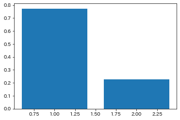

本レポートはrabbit challenge受講者「Manabu Kobatake」がまとめた
機械学習に係る実装演習レポートです。
【無断転載禁止】
線型・・・ざっくり言えば比例。直線（平面、超平面）
回帰問題
ある入力(離散あるいは連続値)から出力(連続値)を予測する問題
直線で予測・・・線型回帰
曲線で予測・・・非線型回帰
バプニックの原理
本来と期待問題よりも難しい問題を解くべきではない。
ランキングが知りたいのに、各ランクの差を細かく知る必要はない
（密度比推定）
回帰で扱うデータ
入力
m次元のベクトル(m=1の場合はスカラ)
出力(目的変数)
スカラー値（向きを持たない）
出力を複数にすることもできる（マルチタスク学習：単一のモデルで複数の課題を解く）
・線形回帰モデルとは、
回帰問題を解くための機械学習モデルの１つであり、教師データから学習する（教師あり学習）
データは回帰曲線＋誤差で構成されていると仮定
この誤差が限りなく小さくなる回帰曲線を描く回帰係数を求めることが線型回帰モデルの目的
・単回帰:説明変数が1次元(m=1)、直線
重回帰:説明変数が多次元(m>1)、曲線
注意：パラメータの数(上記であればm+1)以上のデータがないと解けない
ディープラーニングではパラメータ数が格段に多い(数百～数千)
・データの分割
全てのデータを学習に用いると汎化性能が測定できない
未知のデータに対してどの程度精度が高いか測りたい(Generalization)
→学習用データと検証用データに分割する。
例）学習用：70%、検証用：30%
パラメータは最小二乗法にて求める。
・平均二乗誤差（残差平方和）
データとモデル出力の二乗誤差の和
データは既知、パラメータは未知
・最小二乗法(Mean Squared Error)
なぜ二乗するのか？(負の符号を取り払うためでもあるが・・・)
・絶対値をとってもよいのでは？
・外れ値がないことを確認してから使うべき
※二乗損失は一般に外れ値の存在に弱い
外れ値に影響されて回帰曲線がいびつになる（大多数のデータに対する予測が外れやすい）
上記問題のソリューションとして
Huber損失(スムーズ平均絶対誤差)・・・二乗損失よりも外れ値の影響を受けにくい
Tukey損失・・・外れ値が極端に外れていたら完全に無視する
線型回帰のアプローチを要約すると、与えられた既知のデータ（説明変数）に基づき、最小二乗法を用いて推定値（目的変数）と説明変数の誤差（MSE）が最小となる、未知の回帰係数、および切片を解析的に求める、ことと言える。
重要なのはMSEの最小値そのものではなく、MSEが最小となる回帰係数と切片を求めていることに注意する必要がある。
また、次元が１つの場合は単回帰、複数の場合は重回帰と呼び名は異なるが上記のアプローチそのものは共通している。
MSEをパラメータwについて微分する際、行列に関する知識が必要であり、"逆行列"・"転置"・"元の行列と逆行列の積は単位行列（≒スカラの1相当）"となる点を押さえておかないと、最終的な解にたどり着けない。
%matplotlib inline
import numpy as np
import matplotlib.pyplot as plt
n_sample = 100
var = .2
def linear_func(x):
"""
単回帰：y=2x+5
"""
return 2 * x + 5
def add_noise(y_true, var):
"""
意図的にノイズを付与
"""
return y_true + np.random.normal(scale=var, size=y_true.shape)
def plt_result(xs_train, ys_true, ys_train):
plt.scatter(xs_train, ys_train, facecolor="none", edgecolor="b", s=50, label="training data")
plt.plot(xs_train, ys_true, label="$2 x + 5$")
plt.legend()
#データの作成
xs = np.linspace(0, 1, n_sample)
# 単回帰のベクトル生成
ys_true = linear_func(xs)
# 単価域のベクトルにノイズ付与
ys = add_noise(ys_true, var)
print("xs: {}".format(xs.shape))
print("ys_true: {}".format(ys_true.shape))
print("ys: {}".format(ys.shape))
#結果の描画
plt_result(xs, ys_true, ys)
xs: (100,)
ys_true: (100,)
ys: (100,)
１次関数における、とを求める。
訓練データ
に対して、最小化する目的関数は と書け、
より、目的関数を最小にするは以下のように求まる。
\begin{eqnarray}
\left(
\begin{array}{cc}
\sum_{i=1}^{n} x_{i}^{2} & \sum_{i=1}^{n} x_{i} \
\sum_{i=1}^{n} x_{i} & n
\end{array}
\right)
\left(
\begin{array}{cc}
\hat{a} \
\hat{b}
\end{array}
\right)
&=&
\left(
\begin{array}{cc}
\sum_{i=1}^{n} x_{i} y_{i} \
\sum_{i=1}^{n} y_{i}
\end{array}
\right) \
\left(
\begin{array}{cc}
\hat{a} \
\hat{b}
\end{array}
\right)
&=&
\frac{1}{n \sum_{i=1}^{n} x_{i}^{2} - (\sum_{i=1}^{n} x_{i})^{2}}
\left(
\begin{array}{cc}
n & -\sum_{i=1}^{n} x_{i} \
-\sum_{i=1}^{n} x_{i} & \sum_{i=1}^{n} x_{i}^{2}
\end{array}
\right)
\left(
\begin{array}{cc}
\sum_{i=1}^{n} x_{i} y_{i} \
\sum{i=1}^{n} y_{i}
\end{array}
\right) \
&=&
\frac{1}{n \sum_{i=1}^{n} x_{i}^{2} - (\sum_{i=1}^{n} x_{i})^{2}}
\left(
\begin{array}{cc}
n \sum_{i=1}^{n} x_{i} y_{i} - \sum_{i=1}^{n} x_{i} \sum_{i=1}^{n} y_{i}\
\sum_{i=1}^{n} x_{i}^{2} \sum_{i=1}^{n} y_{i} -\sum_{i=1}^{n} x_{i} \sum_{i=1}^{n} x_{i} y_{i}
\end{array}
\right) \cdots (2)
\end{eqnarray}
(1), (2)からで求める。
#numpy実装の回帰
def train(xs, ys):
# xsとysの分散共分散行列の算出
cov = np.cov(xs, ys, ddof=0)
# a=共分散÷分散 Cov[x,y]/Var[x]
a = cov[0, 1] / cov[0, 0]
# b=yの平均-a×xの平均 μ_y-aμ_x
b = np.mean(ys) - a * np.mean(xs)
return cov, a, b
cov, a, b = train(xs, ys)
print("cov(分散共分散行列): {}".format(cov))
print("coef(回帰係数 w1): {}".format(a))
print("intercept(切片 w0): {}".format(b))
cov(分散共分散行列): [[0.08501684 0.16731897]
[0.16731897 0.36554713]]
coef(回帰係数 w1): 1.9680687190021902
intercept(切片 w0): 4.9856631475057664
#skl実装の回帰
from sklearn.linear_model import LinearRegression
model = LinearRegression()
reg = model.fit(xs.reshape(-1, 1), ys.reshape(-1, 1))
print("coef_: {}".format(reg.coef_))
print("intercept_: {}".format(reg.intercept_))
coef_: [[1.96806872]]
intercept_: [4.98566315]
入力に対する値をで予測する
xs_new = np.linspace(0, 1, n_sample)
ys_pred = a * xs_new + b
plt.scatter(xs, ys, facecolor="none", edgecolor="b", s=50, label="training data")
plt.plot(xs_new, ys_true, label="$2 x + 5$")
plt.plot(xs_new, ys_pred, label="prediction (a={:.2}, b={:.2})".format(a, b))
plt.legend()
plt.show()

n_sample = 10
var = .25
def sin_func(x):
return np.sin(2 * np.pi * x)
def add_noise(y_true, var):
return y_true + np.random.normal(scale=var, size=y_true.shape)
def plt_result(xs, ys_true, ys):
plt.scatter(xs, ys,facecolor="none", edgecolor="b", s=50, label="training data")
plt.plot(xs, ys_true, label="$\sin(2\pi x)$")
plt.legend()
#データの作成
xs = np.linspace(0, 1, n_sample)
ys_true = sin_func(xs)
ys = add_noise(ys_true, var)
print("xs: {}".format(xs.shape))
print("ys_true: {}".format(ys_true.shape))
print("ys: {}".format(ys.shape))
#結果の描画
plt_result(xs, ys_true, ys)
xs: (10,)
ys_true: (10,)
ys: (10,)

モデルとして以下を用いる。
ただし、である。
訓練データに対しては と書ける。
ただし、である。
よって、最小化する目的関数はと書け、
より、求める回帰係数は以下のように書ける。
def polynomial_features(xs, degree=3):
"""多項式特徴ベクトルに変換
X = [[1, x1, x1^2, x1^3],
[1, x2, x2^2, x2^3],
...
[1, xn, xn^2, xn^3]]"""
X = np.ones((len(xs), degree+1))
X_t = X.T #(100, 4)
for i in range(1, degree+1):
X_t[i] = X_t[i-1] * xs
return X_t.T
# 基底関数(多項式)のベクトル取得
# Φ=[𝝓(𝑥1),𝝓(𝑥2),..,𝝓(𝑥𝑛)]^T
Phi = polynomial_features(xs)
# 最小化する目的関数はL=||y-φｗ||^2なので、
# 回帰係数wの算出は、目的関数Lをwで微分した下記式にて求められる
# w=(φ^Tφ)^-1・φ^T・y
Phi_inv = np.dot(np.linalg.inv(np.dot(Phi.T, Phi)), Phi.T)
w = np.dot(Phi_inv, ys)
入力を多項式特徴ベクトルに変換し、で予測する。
Phi_test = polynomial_features(xs)
ys_pred = np.dot(Phi_test, w)
plt.scatter(xs, ys, facecolor="none", edgecolor="b", s=50, label="training data")
plt.plot(xs, ys_true, label="$\sin(2\pi x)$")
plt.plot(xs, ys_pred, label="prediction")
# for i in range(0, 4):
# plt.plot(xs, Phi[:, i], label="basis")
plt.legend()
plt.show()

np.random.random((10, 3))
array([[0.92870813, 0.79924314, 0.23470211],
[0.1027488 , 0.40967157, 0.42185619],
[0.01729831, 0.92177 , 0.87071156],
[0.65183076, 0.27795819, 0.64940182],
[0.9538843 , 0.9202037 , 0.44549401],
[0.19097363, 0.71386155, 0.6741048 ],
[0.39418105, 0.52694875, 0.90610722],
[0.84729919, 0.90891213, 0.29778621],
[0.52405198, 0.15223192, 0.65133854],
[0.61435144, 0.00751101, 0.50794122]])
n_sample = 100
var = .2
def mul_linear_func(x):
"""
多項式 y=w_0+w_1x_1+w_2x_2+w3x_3の結果をベクトルで返却
"""
ww = [1., 0.5, 2., 1.]
return ww[0] + ww[1] * x[:, 0] + ww[2] * x[:, 1] + ww[3] * x[:, 2]
def add_noise(y_true, var):
"""
ノイズ(意図的な誤差)を加える
"""
return y_true + np.random.normal(scale=var, size=y_true.shape)
def plt_result(xs_train, ys_true, ys_train):
plt.scatter(xs_train, ys_train, facecolor="none", edgecolor="b", s=50, label="training data")
plt.plot(xs_train, ys_true, label="$2 x + 5$")
plt.legend()
x_dim = 3
X = np.random.random((n_sample, x_dim))
ys_true = mul_linear_func(X)
ys = add_noise(ys_true, var)
モデルとして以下を用いる。
ただし、陽には書かないが、には定数項のためのという要素があることを仮定する。
訓練データに対してはと書ける。
よって、最小化する目的関数はと書け、
より、求める回帰係数は以下のように書ける。
def add_one(x):
"""
xに定数項x_0=1を付加
"""
return np.concatenate([np.ones(len(x))[:, None], x], axis=1)
# 説明変数(誤差あり)
X_train = add_one(X)
y_train =ys
# 回帰係数w_0,w_1,w_2,_w3を求める
# 𝒘̂ =(𝑋^T𝑋)^−1・𝑋^T・𝒚
pinv = np.dot(np.linalg.inv(np.dot(X_train.T, X_train)), X_train.T)
w = np.dot(pinv, y_train.T)
print("切片w0,回帰係数(w1,w2,w3)",w)
切片w0,回帰係数(w1,w2,w3) [1.07796257 0.35997305 2.11781301 0.83267365]
入力に対する値をで予測する
y_pred = np.dot(X_train,w)
for i,j in zip(ys,y_pred):
print(i,j,abs(i-j))
1.9274191770037656 2.0113235606076154 0.08390438360384977
3.379561049026586 3.2145366640658395 0.16502438496074667
1.5129484129948616 1.764519482944353 0.2515710699494913
2.6205534654166582 2.7678128581065993 0.14725939268994104
1.885570418070994 1.9661731526769524 0.08060273460595835
1.9604374056178702 1.8216152218930464 0.1388221837248238
3.547653104639045 3.653334660153246 0.105681555514201
3.886593562369848 3.388309276880994 0.49828428548885384
1.779071403659669 1.8601359190128315 0.08106451535316239
2.427047673297685 2.6177329022253413 0.19068522892765616
2.425755208984344 2.2164317120765378 0.20932349690780638
1.986089642974768 1.7349651869954839 0.25112445597928423
3.236835772487994 3.5062666252314516 0.26943085274345746
3.8051691349778696 3.526450353881951 0.27871878109591863
2.1259043046270794 2.2136144214640323 0.08771011683695296
2.017860653637518 2.2057790143063123 0.1879183606687942
2.7231467373620544 2.7104077344922395 0.012739002869814886
2.73683476050376 2.606120918377105 0.13071384212665516
3.263828817922701 3.243172823913252 0.020655994009449063
3.5102198355986385 3.3519340234397506 0.15828581215888793
4.252480560600223 4.144959478379722 0.10752108222050172
1.815017832222284 1.6479348603143713 0.16708297190791277
3.2461923604706295 3.1097427092551753 0.13644965121545427
3.1288345332577143 2.7918355672103945 0.3369989660473198
2.8663604203081965 3.107057258595627 0.24069683828743038
2.9275064245499194 2.9554514102171847 0.027944985667265332
1.786960524582479 1.676666537329707 0.11029398725277195
2.604442945457866 2.462436969654796 0.14200597580307006
2.5199875455296326 2.5184286464648715 0.0015588990647610323
2.371906030856424 2.3218677384814455 0.0500382923749787
1.6259363890142846 1.7192647419172125 0.09332835290292785
3.4544831789648374 3.463630432456732 0.009147253491894602
1.074510076189771 1.3792642366846692 0.30475416049489823
3.278015546131599 3.402690942476969 0.12467539634537017
3.67915473162866 3.574842372425472 0.10431235920318782
2.575137320176403 2.555843233900937 0.019294086275465805
2.5152061166447073 2.205240642984257 0.30996547366045046
3.5132439126082913 3.162496454717738 0.35074745789055317
1.6910443062229703 1.877791737232005 0.18674743100903468
3.2249268675728535 3.1328277436816743 0.09209912389117925
1.8923956696302664 2.073893561048518 0.18149789141825146
2.9541237482724068 2.992320612708501 0.03819686443609438
4.105095752888138 3.6638213368283106 0.4412744160598274
3.7117448477897086 3.7400624679697154 0.02831762018000683
2.398638543953871 2.7226176139934646 0.3239790700395937
2.183939645863546 2.272092335322364 0.08815268945881805
2.1624625297898215 2.2943466569857227 0.13188412719590126
2.0424974307347608 1.9437752766745848 0.09872215406017593
1.9705155084193586 2.1570865715450296 0.18657106312567096
2.4674902926445794 2.452203026981834 0.015287265662745408
2.313653748466746 2.2667467798800858 0.0469069685866601
2.9681500050012004 2.904312387482757 0.06383761751844341
2.365151169817282 2.3258268979218464 0.039324271895435636
1.8993387991577249 1.6812439085920032 0.21809489056572162
2.8339562186153957 2.7644614669500993 0.0694947516652964
2.7755079074061526 2.8289336419297806 0.05342573452362798
3.3191722540756907 3.5253654007469053 0.20619314667121458
3.9518852242673854 4.182899030885026 0.2310138066176406
2.6209883929331665 2.6167999571380403 0.0041884357951262885
3.550192431719122 3.5710191544035483 0.020826722684426535
3.622278259154711 3.465514701500444 0.15676355765426697
3.8921154868336365 3.767109704187278 0.12500578264635864
2.5173980693892264 2.563243358359823 0.0458452889705967
3.2312368057877956 3.456532325182791 0.22529551939499548
1.6314747608365892 1.4953643146110993 0.13611044622548985
2.2415400410965414 2.265432768566342 0.023892727469800423
4.139062783115974 3.879206783278557 0.2598559998374168
3.1040681043890483 3.1688856561876952 0.0648175517986469
1.8283169079576118 1.7855653694251612 0.04275153853245062
3.3790825224688303 3.024052328219215 0.35503019424961524
2.190629719534961 2.535545139170492 0.3449154196355311
2.094849877509456 2.2126111178650554 0.1177612403555992
3.6933762611687335 3.5632795504374664 0.13009671073126716
2.6013266953557843 2.5453911616786997 0.05593553367708459
1.723312759089433 1.8018971837432738 0.07858442465384075
1.7986027424218138 1.632845336374194 0.1657574060476199
3.3643573947600762 3.226706448928941 0.13765094583113502
2.8801529886380095 3.131613410840855 0.25146042220284537
1.9588328849397774 2.1694109400537913 0.21057805511401395
3.1713159197609504 3.285095042840117 0.11377912307916649
3.3974813554768817 3.8426146740416605 0.4451333185647788
1.9767531513947714 2.297023673658524 0.3202705222637525
2.8904399818081323 2.8879254531336835 0.0025145286744487905
3.05084280452212 2.847800905840237 0.20304189868188294
3.1262354107854904 3.0864393810775175 0.03979602970797291
2.427045424019304 2.2756166084683294 0.15142881555097443
2.2708075114984725 2.2303835119826303 0.04042399951584219
3.5479545301186377 3.570607131688604 0.02265260156996618
2.5812823428141174 2.6712773969295833 0.08999505411546593
2.6325444886892853 2.6159758922996224 0.016568596389662904
2.1347537916252364 2.3125581911414153 0.17780439951617888
3.4496263602116386 3.4654441557035094 0.01581779549187079
3.501665217569805 3.637283607920401 0.1356183903505963
2.361772118077098 2.3356076724767956 0.02616444560030251
3.406367143848415 3.29765034560762 0.10871679824079505
2.3516820166271395 2.1075373944292566 0.2441446221978829
3.60101238581547 3.8320673467959443 0.23105496098047418
3.3877159503130256 3.6400042690062655 0.25228831869323987
3.6868837264848255 3.790419714048694 0.10353598756386839
1.624613663137683 1.5772803638405841 0.04733329929709895
ww = [1., 0.5, 2., 1.]
for i in range(len(w)):
print("w{0}_true: {1:>5.2} w{0}_estimated: {2:>5.2} diff: {3:>5.2}".format(i, ww[i], w[i], ww[i]-w[i]))
w0_true: 1.0 w0_estimated: 1.1 diff: -0.078
w1_true: 0.5 w1_estimated: 0.36 diff: 0.14
w2_true: 2.0 w2_estimated: 2.1 diff: -0.12
w3_true: 1.0 w3_estimated: 0.83 diff: 0.17
#from モジュール名 import クラス名（もしくは関数名や変数名）
from sklearn.datasets import load_boston
from pandas import DataFrame
import numpy as np
# ボストンデータを"boston"というインスタンスにインポート
boston = load_boston()
type(boston)
sklearn.utils.Bunch
#インポートしたデータを確認(data / target / feature_names / DESCR)
print(boston)
{'data': array([[6.3200e-03, 1.8000e+01, 2.3100e+00, ..., 1.5300e+01, 3.9690e+02,
4.9800e+00],
[2.7310e-02, 0.0000e+00, 7.0700e+00, ..., 1.7800e+01, 3.9690e+02,
9.1400e+00],
[2.7290e-02, 0.0000e+00, 7.0700e+00, ..., 1.7800e+01, 3.9283e+02,
4.0300e+00],
...,
[6.0760e-02, 0.0000e+00, 1.1930e+01, ..., 2.1000e+01, 3.9690e+02,
5.6400e+00],
[1.0959e-01, 0.0000e+00, 1.1930e+01, ..., 2.1000e+01, 3.9345e+02,
6.4800e+00],
[4.7410e-02, 0.0000e+00, 1.1930e+01, ..., 2.1000e+01, 3.9690e+02,
7.8800e+00]]), 'target': array([24. , 21.6, 34.7, 33.4, 36.2, 28.7, 22.9, 27.1, 16.5, 18.9, 15. ,
18.9, 21.7, 20.4, 18.2, 19.9, 23.1, 17.5, 20.2, 18.2, 13.6, 19.6,
15.2, 14.5, 15.6, 13.9, 16.6, 14.8, 18.4, 21. , 12.7, 14.5, 13.2,
13.1, 13.5, 18.9, 20. , 21. , 24.7, 30.8, 34.9, 26.6, 25.3, 24.7,
21.2, 19.3, 20. , 16.6, 14.4, 19.4, 19.7, 20.5, 25. , 23.4, 18.9,
35.4, 24.7, 31.6, 23.3, 19.6, 18.7, 16. , 22.2, 25. , 33. , 23.5,
19.4, 22. , 17.4, 20.9, 24.2, 21.7, 22.8, 23.4, 24.1, 21.4, 20. ,
20.8, 21.2, 20.3, 28. , 23.9, 24.8, 22.9, 23.9, 26.6, 22.5, 22.2,
S 23.6, 28.7, 22.6, 22. , 22.9, 25. , 20.6, 28.4, 21.4, 38.7, 43.8,
33.2, 27.5, 26.5, 18.6, 19.3, 20.1, 19.5, 19.5, 20.4, 19.8, 19.4,
21.7, 22.8, 18.8, 18.7, 18.5, 18.3, 21.2, 19.2, 20.4, 19.3, 22. ,
20.3, 20.5, 17.3, 18.8, 21.4, 15.7, 16.2, 18. , 14.3, 19.2, 19.6,
23. , 18.4, 15.6, 18.1, 17.4, 17.1, 13.3, 17.8, 14. , 14.4, 13.4,
15.6, 11.8, 13.8, 15.6, 14.6, 17.8, 15.4, 21.5, 19.6, 15.3, 19.4,
17. , 15.6, 13.1, 41.3, 24.3, 23.3, 27. , 50. , 50. , 50. , 22.7,
25. , 50. , 23.8, 23.8, 22.3, 17.4, 19.1, 23.1, 23.6, 22.6, 29.4,
23.2, 24.6, 29.9, 37.2, 39.8, 36.2, 37.9, 32.5, 26.4, 29.6, 50. ,
32. , 29.8, 34.9, 37. , 30.5, 36.4, 31.1, 29.1, 50. , 33.3, 30.3,
34.6, 34.9, 32.9, 24.1, 42.3, 48.5, 50. , 22.6, 24.4, 22.5, 24.4,
20. , 21.7, 19.3, 22.4, 28.1, 23.7, 25. , 23.3, 28.7, 21.5, 23. ,
26.7, 21.7, 27.5, 30.1, 44.8, 50. , 37.6, 31.6, 46.7, 31.5, 24.3,
31.7, 41.7, 48.3, 29. , 24. , 25.1, 31.5, 23.7, 23.3, 22. , 20.1,
22.2, 23.7, 17.6, 18.5, 24.3, 20.5, 24.5, 26.2, 24.4, 24.8, 29.6,
42.8, 21.9, 20.9, 44. , 50. , 36. , 30.1, 33.8, 43.1, 48.8, 31. ,
36.5, 22.8, 30.7, 50. , 43.5, 20.7, 21.1, 25.2, 24.4, 35.2, 32.4,
32. , 33.2, 33.1, 29.1, 35.1, 45.4, 35.4, 46. , 50. , 32.2, 22. ,
20.1, 23.2, 22.3, 24.8, 28.5, 37.3, 27.9, 23.9, 21.7, 28.6, 27.1,
20.3, 22.5, 29. , 24.8, 22. , 26.4, 33.1, 36.1, 28.4, 33.4, 28.2,
22.8, 20.3, 16.1, 22.1, 19.4, 21.6, 23.8, 16.2, 17.8, 19.8, 23.1,
21. , 23.8, 23.1, 20.4, 18.5, 25. , 24.6, 23. , 22.2, 19.3, 22.6,
19.8, 17.1, 19.4, 22.2, 20.7, 21.1, 19.5, 18.5, 20.6, 19. , 18.7,
32.7, 16.5, 23.9, 31.2, 17.5, 17.2, 23.1, 24.5, 26.6, 22.9, 24.1,
18.6, 30.1, 18.2, 20.6, 17.8, 21.7, 22.7, 22.6, 25. , 19.9, 20.8,
16.8, 21.9, 27.5, 21.9, 23.1, 50. , 50. , 50. , 50. , 50. , 13.8,
13.8, 15. , 13.9, 13.3, 13.1, 10.2, 10.4, 10.9, 11.3, 12.3, 8.8,
7.2, 10.5, 7.4, 10.2, 11.5, 15.1, 23.2, 9.7, 13.8, 12.7, 13.1,
12.5, 8.5, 5. , 6.3, 5.6, 7.2, 12.1, 8.3, 8.5, 5. , 11.9,
27.9, 17.2, 27.5, 15. , 17.2, 17.9, 16.3, 7. , 7.2, 7.5, 10.4,
8.8, 8.4, 16.7, 14.2, 20.8, 13.4, 11.7, 8.3, 10.2, 10.9, 11. ,
9.5, 14.5, 14.1, 16.1, 14.3, 11.7, 13.4, 9.6, 8.7, 8.4, 12.8,
10.5, 17.1, 18.4, 15.4, 10.8, 11.8, 14.9, 12.6, 14.1, 13. , 13.4,
15.2, 16.1, 17.8, 14.9, 14.1, 12.7, 13.5, 14.9, 20. , 16.4, 17.7,
19.5, 20.2, 21.4, 19.9, 19. , 19.1, 19.1, 20.1, 19.9, 19.6, 23.2,
29.8, 13.8, 13.3, 16.7, 12. , 14.6, 21.4, 23. , 23.7, 25. , 21.8,
20.6, 21.2, 19.1, 20.6, 15.2, 7. , 8.1, 13.6, 20.1, 21.8, 24.5,
23.1, 19.7, 18.3, 21.2, 17.5, 16.8, 22.4, 20.6, 23.9, 22. , 11.9]), 'feature_names': array(['CRIM', 'ZN', 'INDUS', 'CHAS', 'NOX', 'RM', 'AGE', 'DIS', 'RAD',
'TAX', 'PTRATIO', 'B', 'LSTAT'], dtype='<U7'), 'DESCR': ".. _boston_dataset:\n\nBoston house prices dataset\n---------------------------\n\n**Data Set Characteristics:** \n\n :Number of Instances: 506 \n\n :Number of Attributes: 13 numeric/categorical predictive. Median Value (attribute 14) is usually the target.\n\n :Attribute Information (in order):\n - CRIM per capita crime rate by town\n - ZN proportion of residential land zoned for lots over 25,000 sq.ft.\n - INDUS proportion of non-retail business acres per town\n - CHAS Charles River dummy variable (= 1 if tract bounds river; 0 otherwise)\n - NOX nitric oxides concentration (parts per 10 million)\n - RM average number of rooms per dwelling\n - AGE proportion of owner-occupied units built prior to 1940\n - DIS weighted distances to five Boston employment centres\n - RAD index of accessibility to radial highways\n - TAX full-value property-tax rate per $10,000\n - PTRATIO pupil-teacher ratio by town\n - B 1000(Bk - 0.63)^2 where Bk is the proportion of black people by town\n - LSTAT % lower status of the population\n - MEDV Median value of owner-occupied homes in $1000's\n\n :Missing Attribute Values: None\n\n :Creator: Harrison, D. and Rubinfeld, D.L.\n\nThis is a copy of UCI ML housing dataset.\nhttps://archive.ics.uci.edu/ml/machine-learning-databases/housing/\n\n\nThis dataset was taken from the StatLib library which is maintained at Carnegie Mellon University.\n\nThe Boston house-price data of Harrison, D. and Rubinfeld, D.L. 'Hedonic\nprices and the demand for clean air', J. Environ. Economics & Management,\nvol.5, 81-102, 1978. Used in Belsley, Kuh & Welsch, 'Regression diagnostics\n...', Wiley, 1980. N.B. Various transformations are used in the table on\npages 244-261 of the latter.\n\nThe Boston house-price data has been used in many machine learning papers that address regression\nproblems. \n \n.. topic:: References\n\n - Belsley, Kuh & Welsch, 'Regression diagnostics: Identifying Influential Data and Sources of Collinearity', Wiley, 1980. 244-261.\n - Quinlan,R. (1993). Combining Instance-Based and Model-Based Learning. In Proceedings on the Tenth International Conference of Machine Learning, 236-243, University of Massachusetts, Amherst. Morgan Kaufmann.\n", 'filename': 'c:\\users\\学\\appdata\\local\\programs\\python\\python39\\lib\\site-packages\\sklearn\\datasets\\data\\boston_house_prices.csv'}
#DESCR変数の中身を確認
print(boston['DESCR'])
.. _boston_dataset:
Boston house prices dataset
---------------------------
**Data Set Characteristics:**
:Number of Instances: 506
:Number of Attributes: 13 numeric/categorical predictive. Median Value (attribute 14) is usually the target.
:Attribute Information (in order):
- CRIM per capita crime rate by town
- ZN proportion of residential land zoned for lots over 25,000 sq.ft.
- INDUS proportion of non-retail business acres per town
- CHAS Charles River dummy variable (= 1 if tract bounds river; 0 otherwise)
- NOX nitric oxides concentration (parts per 10 million)
- RM average number of rooms per dwelling
- AGE proportion of owner-occupied units built prior to 1940
- DIS weighted distances to five Boston employment centres
- RAD index of accessibility to radial highways
- TAX full-value property-tax rate per $10,000
- PTRATIO pupil-teacher ratio by town
- B 1000(Bk - 0.63)^2 where Bk is the proportion of black people by town
- LSTAT % lower status of the population
- MEDV Median value of owner-occupied homes in $1000's
:Missing Attribute Values: None
:Creator: Harrison, D. and Rubinfeld, D.L.
This is a copy of UCI ML housing dataset.
https://archive.ics.uci.edu/ml/machine-learning-databases/housing/
This dataset was taken from the StatLib library which is maintained at Carnegie Mellon University.
The Boston house-price data of Harrison, D. and Rubinfeld, D.L. 'Hedonic
prices and the demand for clean air', J. Environ. Economics & Management,
vol.5, 81-102, 1978. Used in Belsley, Kuh & Welsch, 'Regression diagnostics
...', Wiley, 1980. N.B. Various transformations are used in the table on
pages 244-261 of the latter.
The Boston house-price data has been used in many machine learning papers that address regression
problems.
.. topic:: References
- Belsley, Kuh & Welsch, 'Regression diagnostics: Identifying Influential Data and Sources of Collinearity', Wiley, 1980. 244-261.
- Quinlan,R. (1993). Combining Instance-Based and Model-Based Learning. In Proceedings on the Tenth International Conference of Machine Learning, 236-243, University of Massachusetts, Amherst. Morgan Kaufmann.
#feature_names変数の中身を確認
#カラム名
#--------説明変数候補 --------------------------
#CRIM 犯罪発生率
#ZN 25000平方フィート以上の住宅区間の割合
#INDUS 非小売業の土地面積の割合
#CHAS チャールズ川沿いか否か(1:川沿い、0:川沿いでない)
#NOX 窒素化合物の濃度
#RM 一戸当たりの平均部屋数
#AGE 1940年よりも前に建てられた家屋の割合
#DIS ボストンの主な5つの雇用圏までの重み付き距離
#RAD 幹線道路へのアクセス指数
#TAX 10,000ドルあたりの所得税率
#PTRATIO 1教師当たりの生徒数
#B 1,000(Bk-0.63)-2として計算される量（Bkはアフリカ系アメリカ人居住者の割合）
#LSTAT 低所得者の割合
#--------目的変数 --------------------------
#PRICE 住宅価格
print(boston['feature_names'])
['CRIM' 'ZN' 'INDUS' 'CHAS' 'NOX' 'RM' 'AGE' 'DIS' 'RAD' 'TAX' 'PTRATIO'
'B' 'LSTAT']
#data変数(説明変数)の中身を確認
print(boston['data'])
[[6.3200e-03 1.8000e+01 2.3100e+00 ... 1.5300e+01 3.9690e+02 4.9800e+00]
[2.7310e-02 0.0000e+00 7.0700e+00 ... 1.7800e+01 3.9690e+02 9.1400e+00]
[2.7290e-02 0.0000e+00 7.0700e+00 ... 1.7800e+01 3.9283e+02 4.0300e+00]
...
[6.0760e-02 0.0000e+00 1.1930e+01 ... 2.1000e+01 3.9690e+02 5.6400e+00]
[1.0959e-01 0.0000e+00 1.1930e+01 ... 2.1000e+01 3.9345e+02 6.4800e+00]
[4.7410e-02 0.0000e+00 1.1930e+01 ... 2.1000e+01 3.9690e+02 7.8800e+00]]
#target変数(目的変数)の中身を確認
# 50以上はまとめて50表記になっているように見受けられる
print(boston['target'])
[24. 21.6 34.7 33.4 36.2 28.7 22.9 27.1 16.5 18.9 15. 18.9 21.7 20.4
18.2 19.9 23.1 17.5 20.2 18.2 13.6 19.6 15.2 14.5 15.6 13.9 16.6 14.8
18.4 21. 12.7 14.5 13.2 13.1 13.5 18.9 20. 21. 24.7 30.8 34.9 26.6
25.3 24.7 21.2 19.3 20. 16.6 14.4 19.4 19.7 20.5 25. 23.4 18.9 35.4
24.7 31.6 23.3 19.6 18.7 16. 22.2 25. 33. 23.5 19.4 22. 17.4 20.9
24.2 21.7 22.8 23.4 24.1 21.4 20. 20.8 21.2 20.3 28. 23.9 24.8 22.9
23.9 26.6 22.5 22.2 23.6 28.7 22.6 22. 22.9 25. 20.6 28.4 21.4 38.7
43.8 33.2 27.5 26.5 18.6 19.3 20.1 19.5 19.5 20.4 19.8 19.4 21.7 22.8
18.8 18.7 18.5 18.3 21.2 19.2 20.4 19.3 22. 20.3 20.5 17.3 18.8 21.4
15.7 16.2 18. 14.3 19.2 19.6 23. 18.4 15.6 18.1 17.4 17.1 13.3 17.8
14. 14.4 13.4 15.6 11.8 13.8 15.6 14.6 17.8 15.4 21.5 19.6 15.3 19.4
17. 15.6 13.1 41.3 24.3 23.3 27. 50. 50. 50. 22.7 25. 50. 23.8
23.8 22.3 17.4 19.1 23.1 23.6 22.6 29.4 23.2 24.6 29.9 37.2 39.8 36.2
37.9 32.5 26.4 29.6 50. 32. 29.8 34.9 37. 30.5 36.4 31.1 29.1 50.
33.3 30.3 34.6 34.9 32.9 24.1 42.3 48.5 50. 22.6 24.4 22.5 24.4 20.
21.7 19.3 22.4 28.1 23.7 25. 23.3 28.7 21.5 23. 26.7 21.7 27.5 30.1
44.8 50. 37.6 31.6 46.7 31.5 24.3 31.7 41.7 48.3 29. 24. 25.1 31.5
23.7 23.3 22. 20.1 22.2 23.7 17.6 18.5 24.3 20.5 24.5 26.2 24.4 24.8
29.6 42.8 21.9 20.9 44. 50. 36. 30.1 33.8 43.1 48.8 31. 36.5 22.8
30.7 50. 43.5 20.7 21.1 25.2 24.4 35.2 32.4 32. 33.2 33.1 29.1 35.1
45.4 35.4 46. 50. 32.2 22. 20.1 23.2 22.3 24.8 28.5 37.3 27.9 23.9
21.7 28.6 27.1 20.3 22.5 29. 24.8 22. 26.4 33.1 36.1 28.4 33.4 28.2
22.8 20.3 16.1 22.1 19.4 21.6 23.8 16.2 17.8 19.8 23.1 21. 23.8 23.1
20.4 18.5 25. 24.6 23. 22.2 19.3 22.6 19.8 17.1 19.4 22.2 20.7 21.1
19.5 18.5 20.6 19. 18.7 32.7 16.5 23.9 31.2 17.5 17.2 23.1 24.5 26.6
22.9 24.1 18.6 30.1 18.2 20.6 17.8 21.7 22.7 22.6 25. 19.9 20.8 16.8
21.9 27.5 21.9 23.1 50. 50. 50. 50. 50. 13.8 13.8 15. 13.9 13.3
13.1 10.2 10.4 10.9 11.3 12.3 8.8 7.2 10.5 7.4 10.2 11.5 15.1 23.2
9.7 13.8 12.7 13.1 12.5 8.5 5. 6.3 5.6 7.2 12.1 8.3 8.5 5.
11.9 27.9 17.2 27.5 15. 17.2 17.9 16.3 7. 7.2 7.5 10.4 8.8 8.4
16.7 14.2 20.8 13.4 11.7 8.3 10.2 10.9 11. 9.5 14.5 14.1 16.1 14.3
11.7 13.4 9.6 8.7 8.4 12.8 10.5 17.1 18.4 15.4 10.8 11.8 14.9 12.6
14.1 13. 13.4 15.2 16.1 17.8 14.9 14.1 12.7 13.5 14.9 20. 16.4 17.7
19.5 20.2 21.4 19.9 19. 19.1 19.1 20.1 19.9 19.6 23.2 29.8 13.8 13.3
16.7 12. 14.6 21.4 23. 23.7 25. 21.8 20.6 21.2 19.1 20.6 15.2 7.
8.1 13.6 20.1 21.8 24.5 23.1 19.7 18.3 21.2 17.5 16.8 22.4 20.6 23.9
22. 11.9]
# 説明変数らをDataFrameへ変換
df = DataFrame(data=boston.data, columns = boston.feature_names)
df.describe()
| CRIM | ZN | INDUS | CHAS | NOX | RM | AGE | DIS | RAD | TAX | PTRATIO | B | LSTAT | |
|---|---|---|---|---|---|---|---|---|---|---|---|---|---|
| count | 506.000000 | 506.000000 | 506.000000 | 506.000000 | 506.000000 | 506.000000 | 506.000000 | 506.000000 | 506.000000 | 506.000000 | 506.000000 | 506.000000 | 506.000000 |
| mean | 3.613524 | 11.363636 | 11.136779 | 0.069170 | 0.554695 | 6.284634 | 68.574901 | 3.795043 | 9.549407 | 408.237154 | 18.455534 | 356.674032 | 12.653063 |
| std | 8.601545 | 23.322453 | 6.860353 | 0.253994 | 0.115878 | 0.702617 | 28.148861 | 2.105710 | 8.707259 | 168.537116 | 2.164946 | 91.294864 | 7.141062 |
| min | 0.006320 | 0.000000 | 0.460000 | 0.000000 | 0.385000 | 3.561000 | 2.900000 | 1.129600 | 1.000000 | 187.000000 | 12.600000 | 0.320000 | 1.730000 |
| 25% | 0.082045 | 0.000000 | 5.190000 | 0.000000 | 0.449000 | 5.885500 | 45.025000 | 2.100175 | 4.000000 | 279.000000 | 17.400000 | 375.377500 | 6.950000 |
| 50% | 0.256510 | 0.000000 | 9.690000 | 0.000000 | 0.538000 | 6.208500 | 77.500000 | 3.207450 | 5.000000 | 330.000000 | 19.050000 | 391.440000 | 11.360000 |
| 75% | 3.677083 | 12.500000 | 18.100000 | 0.000000 | 0.624000 | 6.623500 | 94.075000 | 5.188425 | 24.000000 | 666.000000 | 20.200000 | 396.225000 | 16.955000 |
| max | 88.976200 | 100.000000 | 27.740000 | 1.000000 | 0.871000 | 8.780000 | 100.000000 | 12.126500 | 24.000000 | 711.000000 | 22.000000 | 396.900000 | 37.970000 |
# 目的変数をDataFrameへ追加
df['PRICE'] = np.array(boston.target)
# 価格の最大値は50、最小値は5
df['PRICE'].describe()
count 506.000000
mean 22.532806
std 9.197104
min 5.000000
25% 17.025000
50% 21.200000
75% 25.000000
max 50.000000
Name: PRICE, dtype: float64
# 最初の20行を表示
# ZNが0番目だけ18...と思いきや6番目～12.5という値もあり
# CHASは0or1のみとる変数
df.head(20)
# 最後の20行を表示
#df.tail(20)
| CRIM | ZN | INDUS | CHAS | NOX | RM | AGE | DIS | RAD | TAX | PTRATIO | B | LSTAT | PRICE | |
|---|---|---|---|---|---|---|---|---|---|---|---|---|---|---|
| 0 | 0.00632 | 18.0 | 2.31 | 0.0 | 0.538 | 6.575 | 65.2 | 4.0900 | 1.0 | 296.0 | 15.3 | 396.90 | 4.98 | 24.0 |
| 1 | 0.02731 | 0.0 | 7.07 | 0.0 | 0.469 | 6.421 | 78.9 | 4.9671 | 2.0 | 242.0 | 17.8 | 396.90 | 9.14 | 21.6 |
| 2 | 0.02729 | 0.0 | 7.07 | 0.0 | 0.469 | 7.185 | 61.1 | 4.9671 | 2.0 | 242.0 | 17.8 | 392.83 | 4.03 | 34.7 |
| 3 | 0.03237 | 0.0 | 2.18 | 0.0 | 0.458 | 6.998 | 45.8 | 6.0622 | 3.0 | 222.0 | 18.7 | 394.63 | 2.94 | 33.4 |
| 4 | 0.06905 | 0.0 | 2.18 | 0.0 | 0.458 | 7.147 | 54.2 | 6.0622 | 3.0 | 222.0 | 18.7 | 396.90 | 5.33 | 36.2 |
| 5 | 0.02985 | 0.0 | 2.18 | 0.0 | 0.458 | 6.430 | 58.7 | 6.0622 | 3.0 | 222.0 | 18.7 | 394.12 | 5.21 | 28.7 |
| 6 | 0.08829 | 12.5 | 7.87 | 0.0 | 0.524 | 6.012 | 66.6 | 5.5605 | 5.0 | 311.0 | 15.2 | 395.60 | 12.43 | 22.9 |
| 7 | 0.14455 | 12.5 | 7.87 | 0.0 | 0.524 | 6.172 | 96.1 | 5.9505 | 5.0 | 311.0 | 15.2 | 396.90 | 19.15 | 27.1 |
| 8 | 0.21124 | 12.5 | 7.87 | 0.0 | 0.524 | 5.631 | 100.0 | 6.0821 | 5.0 | 311.0 | 15.2 | 386.63 | 29.93 | 16.5 |
| 9 | 0.17004 | 12.5 | 7.87 | 0.0 | 0.524 | 6.004 | 85.9 | 6.5921 | 5.0 | 311.0 | 15.2 | 386.71 | 17.10 | 18.9 |
| 10 | 0.22489 | 12.5 | 7.87 | 0.0 | 0.524 | 6.377 | 94.3 | 6.3467 | 5.0 | 311.0 | 15.2 | 392.52 | 20.45 | 15.0 |
| 11 | 0.11747 | 12.5 | 7.87 | 0.0 | 0.524 | 6.009 | 82.9 | 6.2267 | 5.0 | 311.0 | 15.2 | 396.90 | 13.27 | 18.9 |
| 12 | 0.09378 | 12.5 | 7.87 | 0.0 | 0.524 | 5.889 | 39.0 | 5.4509 | 5.0 | 311.0 | 15.2 | 390.50 | 15.71 | 21.7 |
| 13 | 0.62976 | 0.0 | 8.14 | 0.0 | 0.538 | 5.949 | 61.8 | 4.7075 | 4.0 | 307.0 | 21.0 | 396.90 | 8.26 | 20.4 |
| 14 | 0.63796 | 0.0 | 8.14 | 0.0 | 0.538 | 6.096 | 84.5 | 4.4619 | 4.0 | 307.0 | 21.0 | 380.02 | 10.26 | 18.2 |
| 15 | 0.62739 | 0.0 | 8.14 | 0.0 | 0.538 | 5.834 | 56.5 | 4.4986 | 4.0 | 307.0 | 21.0 | 395.62 | 8.47 | 19.9 |
| 16 | 1.05393 | 0.0 | 8.14 | 0.0 | 0.538 | 5.935 | 29.3 | 4.4986 | 4.0 | 307.0 | 21.0 | 386.85 | 6.58 | 23.1 |
| 17 | 0.78420 | 0.0 | 8.14 | 0.0 | 0.538 | 5.990 | 81.7 | 4.2579 | 4.0 | 307.0 | 21.0 | 386.75 | 14.67 | 17.5 |
| 18 | 0.80271 | 0.0 | 8.14 | 0.0 | 0.538 | 5.456 | 36.6 | 3.7965 | 4.0 | 307.0 | 21.0 | 288.99 | 11.69 | 20.2 |
| 19 | 0.72580 | 0.0 | 8.14 | 0.0 | 0.538 | 5.727 | 69.5 | 3.7965 | 4.0 | 307.0 | 21.0 | 390.95 | 11.28 | 18.2 |
#カラムを指定してデータを表示(平均部屋数)
df[['RM']].head(10)
| RM | |
|---|---|
| 0 | 6.575 |
| 1 | 6.421 |
| 2 | 7.185 |
| 3 | 6.998 |
| 4 | 7.147 |
| 5 | 6.430 |
| 6 | 6.012 |
| 7 | 6.172 |
| 8 | 5.631 |
| 9 | 6.004 |
# 部屋数を説明変数としてdataに格納
data = df.loc[:, ['RM']].values
#説明変数 dataリストの表示(1-10)…x
data[0:10]
array([[6.575],
[6.421],
[7.185],
[6.998],
[7.147],
[6.43 ],
[6.012],
[6.172],
[5.631],
[6.004]])
# 目的変数(価格)をtargetに格納…y
target = df.loc[:, 'PRICE'].values
# 目的変数リストtargetの表示
target[0:10]
array([24. , 21.6, 34.7, 33.4, 36.2, 28.7, 22.9, 27.1, 16.5, 18.9])
## sklearnモジュールからLinearRegressionをインポート
from sklearn.linear_model import LinearRegression
# オブジェクト生成
model = LinearRegression()
model.get_params()
#model = LinearRegression(fit_intercept = True, normalize = False, copy_X = True, n_jobs = 1)
{'copy_X': True,
'fit_intercept': True,
'n_jobs': None,
'normalize': False,
'positive': False}
#-----------------------------------------------------------
# fit関数でパラメータ推定(最小二乗法によるwの推定)
# w=(X^T・X)^-1・X^T・y を解いて切片と回帰係数を求めている
# X:説明変数(部屋数)
# y:説明変数(価格)
# w0:切片（バイアス項）
# w1:部屋数の回帰係数
#-----------------------------------------------------------
model.fit(data, target)
# パラメータ(w1)の重み(回帰係数)を確認(部屋数)
print("回帰係数(部屋数):",model.coef_)
# 切片(w0)の大きさを確認
print("切片:",model.intercept_)
回帰係数(部屋数): [9.10210898]
切片: -34.670620776438554
#予測
# 部屋数が4未満の場合、マイナス価格となってしまう。
# そもそもデータセットに部屋数1～3のデータはいなかった（外挿問題）
# 5～7部屋のデータで1部屋や100部屋の予測はできない（外挿問題には弱い）
for i in range(1,10):
print("部屋数:",i,"予想価格:",model.predict([[i]]))
部屋数: 1 予想価格: [-25.5685118]
部屋数: 2 予想価格: [-16.46640281]
部屋数: 3 予想価格: [-7.36429383]
部屋数: 4 予想価格: [1.73781515]
部屋数: 5 予想価格: [10.83992413]
部屋数: 6 予想価格: [19.94203311]
部屋数: 7 予想価格: [29.04414209]
部屋数: 8 予想価格: [38.14625107]
部屋数: 9 予想価格: [47.24836005]
#カラムを指定してデータを表示(犯罪率と部屋数)
df[['CRIM', 'RM']].head()
| CRIM | RM | |
|---|---|---|
| 0 | 0.00632 | 6.575 |
| 1 | 0.02731 | 6.421 |
| 2 | 0.02729 | 7.185 |
| 3 | 0.03237 | 6.998 |
| 4 | 0.06905 | 7.147 |
# 説明変数(犯罪率と部屋数)
data2 = df.loc[:, ['CRIM', 'RM']].values
# 目的変数(価格)
target2 = df.loc[:, 'PRICE'].values
# 線型回帰モデルのインスタンス生成
model2 = LinearRegression()
# fit関数でパラメータ推定
# 最小二乗法を用いてwを求めるのですよ
# w=(X^TX)^-1・X^Ty を解いて切片と回帰係数を求めている
# w0:切片（バイアス項）
# w1:犯罪率の回帰係数
# w2:部屋数の回帰係数
model2.fit(data2, target2)
# 各パラメータ(w1,w2)の重み(回帰係数)を確認(犯罪率、部屋数)
print("回帰係数(犯罪率、部屋数):",model2.coef_)
# 切片の大きさを確認
print("切片:",model2.intercept_)
回帰係数(犯罪率、部屋数): [-0.26491325 8.39106825]
切片: -29.24471945192992
# 予測を行う(犯罪率、部屋数)
X=[
[0.2,7],
[0.6,7],
[0.2,9],
[0.6,9],
[0.1,5],
[0.9,5],
]
# 犯罪率が上げれば若干価格も下がる
# 部屋数の増減の方が価格への影響は大きい
for x in X:
print("犯罪率:",x[0],"部屋数:",x[1],"予測価格:",model2.predict([x]))
犯罪率: 0.2 部屋数: 7 予測価格: [29.43977562]
犯罪率: 0.6 部屋数: 7 予測価格: [29.33381032]
犯罪率: 0.2 部屋数: 9 予測価格: [46.22191212]
犯罪率: 0.6 部屋数: 9 予測価格: [46.11594682]
犯罪率: 0.1 部屋数: 5 予測価格: [12.68413046]
犯罪率: 0.9 部屋数: 5 予測価格: [12.47219985]
# 単回帰の回帰係数と切片を出力
print('[単回帰]推定された回帰係数(部屋数): %.3f, 推定された切片 : %.3f' % (model.coef_, model.intercept_))
# 重回帰の回帰係数と切片を出力
# 部屋数の回帰係数が正の値で犯罪率よりも大きい値のため、
# 部屋数の方が価格との相関が強いといえる
print('[重回帰]推定された回帰係数(犯罪率,部屋数): %.3f,%.3f, 推定された切片 : %.3f' % (model2.coef_[0],model2.coef_[1], model2.intercept_))
[単回帰]推定された回帰係数: 9.236, 推定された切片 : -35.481
[重回帰]推定された回帰係数(犯罪率,部屋数): -0.265,8.391, 推定された切片 : -29.245
# 部屋数、犯罪率、価格で相関を見てみる
import seaborn as sns
df2=df.loc[:, ['RM','CRIM','PRICE']]
sns.pairplot(df2)
# 部屋数と価格には正の相関がみられる
# 犯罪率と価格の間には微弱ながら負の相関がみられる
<seaborn.axisgrid.PairGrid at 0x2a4cedc7280>

print('単回帰決定係数: %.3f, 重回帰決定係数 : %.3f' % (model.score(data,target), model2.score(data2,target2)))
# train_test_splitをインポート
from sklearn.model_selection import train_test_split
# 70%を学習用、30%を検証用データにするよう分割
X_train, X_test, y_train, y_test = train_test_split(data, target,
test_size = 0.3, random_state = 666)
# 学習用データでパラメータ推定
model.fit(X_train, y_train)
# 作成したモデルから予測（学習用、検証用モデル使用）
y_train_pred = model.predict(X_train)
y_test_pred = model.predict(X_test)
# matplotlibをインポート
import matplotlib.pyplot as plt
# Jupyterを利用していたら、以下のおまじないを書くとnotebook上に図が表示
%matplotlib inline
# 学習用、検証用それぞれで残差を散布図にプロット
# 学習用は青点
plt.scatter(y_train_pred, y_train_pred - y_train, c = 'blue', marker = 'o', label = 'Train Data')
# 検証用は薄緑点
plt.scatter(y_test_pred, y_test_pred - y_test, c = 'lightgreen', marker = 's', label = 'Test Data')
# X軸には予測値
plt.xlabel('Predicted Values:予測値')
# Y軸には残差
plt.ylabel('Residuals:残差')
# 凡例を左上に表示
plt.legend(loc = 'upper left')
# y = 0に直線を引く
plt.hlines(y = 0, xmin = -10, xmax = 50, lw = 2, color = 'red')
# x軸の取る目盛の範囲は10～50
plt.xlim([10, 50])
plt.show()

# 平均二乗誤差を評価するためのメソッドを呼び出し
from sklearn.metrics import mean_squared_error
# 学習用、検証用データに関して平均二乗誤差を出力
print('MSE Train : %.3f, Test : %.3f' % (mean_squared_error(y_train, y_train_pred), mean_squared_error(y_test, y_test_pred)))
# 学習用、検証用データに関してR^2を出力
print('R^2 Train : %.3f, Test : %.3f' % (model.score(X_train, y_train), model.score(X_test, y_test)))
MSE Train : 44.983, Test : 40.412
R^2 Train : 0.500, Test : 0.434
# 説明変数
data3 = df.loc[:, ['CRIM', 'RM', 'NOX' ,'TAX']].values
# 目的変数
target3 = df.loc[:, 'PRICE'].values
# オブジェクト生成
model3 = LinearRegression()
model3.get_params()
{'copy_X': True,
'fit_intercept': True,
'n_jobs': None,
'normalize': False,
'positive': False}
# 最小二乗法を用いてwを求めるのですよ
# w=(X^TX)^-1・X^Ty を解いて切片と回帰係数を求めている
# w0:切片（バイアス項）
# w1:犯罪率の回帰係数
# w2:部屋数の回帰係数
# w3:窒素化合物濃度の回帰係数
# w4:所得税率の回帰係数
model3.fit(data3,target3)
df.loc[:,['NOX','TAX']].describe()
| NOX | TAX | |
|---|---|---|
| count | 506.000000 | 506.000000 |
| mean | 0.554695 | 408.237154 |
| std | 0.115878 | 168.537116 |
| min | 0.385000 | 187.000000 |
| 25% | 0.449000 | 279.000000 |
| 50% | 0.538000 | 330.000000 |
| 75% | 0.624000 | 666.000000 |
| max | 0.871000 | 711.000000 |
# 予測を行う(犯罪率、部屋数,窒素化合物,所得税率)
X=[
[0.6,7,0.2,222],
[0.6,7,0.4,222],
[0.6,7,0.6,222],
[0.6,7,0.8,222],
[0.6,7,0.4,200],
[0.6,7,0.4,220],
[0.6,7,0.4,240],
[0.6,7,0.4,260]
]
# 窒素化合物の濃度が上がると価格は徐々に下がる（納得）
# 所得税率が上がると価格も下がる傾向に見えるが何故？ドメイン知識必要？
for x in X:
print("犯罪率:",x[0],"部屋数:",x[1],"窒素化合物:",x[2],"所得税率:",x[3],"予測価格:",model3.predict([x]))
犯罪率: 0.6 部屋数: 7 窒素化合物: 0.2 所得税率: 222 予測価格: [32.55441875]
犯罪率: 0.6 部屋数: 7 窒素化合物: 0.4 所得税率: 222 予測価格: [31.2152052]
犯罪率: 0.6 部屋数: 7 窒素化合物: 0.6 所得税率: 222 予測価格: [29.87599165]
犯罪率: 0.6 部屋数: 7 窒素化合物: 0.8 所得税率: 222 予測価格: [28.53677809]
犯罪率: 0.6 部屋数: 7 窒素化合物: 0.4 所得税率: 200 予測価格: [31.41338147]
犯罪率: 0.6 部屋数: 7 窒素化合物: 0.4 所得税率: 220 予測価格: [31.23322122]
犯罪率: 0.6 部屋数: 7 窒素化合物: 0.4 所得税率: 240 予測価格: [31.05306097]
犯罪率: 0.6 部屋数: 7 窒素化合物: 0.4 所得税率: 260 予測価格: [30.87290073]
# 重回帰の回帰係数と切片を出力
print('推定された回帰係数(犯罪率,部屋数,濃度,税率): %.3f,%.3f,%.3f,%.3f, 推定された切片 : %.3f'
% (model3.coef_[0],model3.coef_[1],model3.coef_[2],model3.coef_[3], model3.intercept_))
推定された回帰係数(犯罪率,部屋数,濃度,税率): -0.135,7.775,-6.696,-0.009, 推定された切片 : -18.448
df3=df.loc[:, ['RM','CRIM','NOX','TAX','PRICE']]
sns.pairplot(df3)
# 各説明変数間の相関を表示
<seaborn.axisgrid.PairGrid at 0x2a4d0610be0>

# 70%を学習用、30%を検証用データにするよう分割
X_train, X_test, y_train, y_test = train_test_split(data3, target3,
test_size = 0.3, random_state = 666)
# 学習3データでパラメータ推定
model3.fit(X_train, y_train)
# 作成したモデルから予測（学習用、検証用モデル使用）
y_train_pred = model3.predict(X_train)
y_test_pred = model3.predict(X_test)
# 学習用、検証用それぞれで残差を散布図にプロット
# 学習用は青点
plt.scatter(y_train_pred, y_train_pred - y_train, c = 'blue', marker = 'o', label = 'Train Data')
# 検証用は薄緑点
plt.scatter(y_test_pred, y_test_pred - y_test, c = 'lightgreen', marker = 's', label = 'Test Data')
# X軸には予測値
plt.xlabel('Predicted Values:予測値')
# Y軸には残差
plt.ylabel('Residuals:残差')
# 凡例を左上に表示
plt.legend(loc = 'upper left')
# y = 0に直線を引く
plt.hlines(y = 0, xmin = -10, xmax = 50, lw = 2, color = 'red')
# x軸の取る目盛の範囲は10～50
plt.xlim([10, 50])
plt.show()

線形モデル＝直線しか表せない…誤解！！
重みwについて線形であれば非線形モデルも表現できる！！
非線形回帰モデルとは、重みwに対する線形回帰モデルを用いた機械学習モデル
→基底展開法と呼ばれる方法
未学習(underfitting)と過学習(overfitting)
・学習データに対して、十分な誤差が得られないケースを未学習という。
対策：モデルの表現力(次元)を上げる。
・誤差は小さいが、テスト集合誤差との差が大きいケースを過学習という。
対策１：学習データを増やす（数の暴力）
対策２：不要な基底関数を削除して、表現力を抑止
対策３：正則化法を用いて表現力を抑止
正則化
Ridge推定量（丸みをおびる。パラメータを0に近づけるように推定）
Lasso推定量（いくつからのパラメータを正確に0に推定）
正則化パラメータを加味することにより過学習を抑制し、滑らかなfittingが期待できる。
学習(train)データと検証(test)データを分割し、汎化性能を測定する。
・未学習：trainデータとtestデータが同じ割合で低下するものの、エラーが収束しない。
・ほどよい：trainデータとtestデータが同じ割合で低下し、エラーのない状態に限りなく近づく。
・過学習：trainデータはerrorが低下しているが、検証データは途中から増加してしまう
※ディープラーニングでは、2018年にある論文(The double descent risk curve)にて、エラーが増加しても検証を続けるとエラーが低下する傾向が見られるとの内容が発表された。
１．ホールドアウト法
例）データの先頭から70%を学習用、残り30%を検証用とする。
なお、途中でこの選定は変えない。
※いつ使ってはいけないか？
手元にデータが少ない場合は使うべきではない。
・外れ値がある場合、外れ値が検証用データに含まれると正しく評価されない。
・
２．クロスバリデーション法
データを学習用と検証用に分割するが
イテレータごとに対象データをスライドし、それぞれモデルを作成・学習する。
チューニングパラメータは固定
精度の平均を示すCV値が最も低いモデルを採用する。
精度の計算方法とは？
各モデルにおける検証データを用いた検証誤差（二乗誤差＝MSE(test)）の小ささが精度になる
※学習時と検証時で同じ計算方法を行うべき
精度100%・・・trainデータで検証してしまっている、過学習の恐れあり
３．グリッドサーチ
全てのチューニングパラメータの組み合わせで評価値を算出
最も良い評価値を持つチューニングパラメータを持つ組み合わせを、「いいモデルのパラメータ」として採用
※実数すべてを網羅することは流石に難しい
ベイズ最適化→ニューラルネットワーク
非線型回帰モデルは、パラメータ(重み)に対する線型回帰モデルを用いたMSE最小化のアプローチであり、説明変数に非線形となる関数を用いても、パラメータについては線型回帰と同じ方法で解析解を得られる。
学習データを増加させると過学習の傾向が見られる可能性があるため、過学習を是正する手法がいくつかある。
多くのケースで有効なものとして、正則化がある。パラメータwの回帰係数を求める際に、正則化項（≒罰則項、バイアス項）を加味して必要以上にパラメータwが極大化しないよう、wの取りうる値を制限することができる。これにより滑らかな回帰曲線に近づく。
正則化にはRidge推定量とLasso推定量という２つの方法があり、前者は説明変数全体に対して少しずつパラメータを0に近づけていくが、後者は特定の影響の小さな説明変数のパラメータを0にする
import numpy as np
import matplotlib.pyplot as plt
import seaborn as sns
%matplotlib inline
#seaborn設定
sns.set()
#背景変更
sns.set_style("darkgrid", {'grid.linestyle': '--'})
#大きさ(スケール変更)
sns.set_context("paper")
n=100
def true_func(x):
"""
非線型の曲線を描くための関数(真の関数)
z=w0+w1x+w2x^2+w3x^3+w4x^4
w0=1
w1=-48
w2=218
w3=-315
w4=145
"""
# 4次の多項式で非線型を実現（ただしパラメータwは線型）
# z=w0+w1x+w2x^2+w3x^3+w4x^4
# z=1-48x+218x^2-315x^3+145x^4
z = 1-48*x+218*x**2-315*x**3+145*x**4
return z
def linear_func(x):
"""
線型関数
z=x
"""
z = x
return z
# 真の関数からノイズを伴うデータを生成
# 真の関数(4次の多項式)からデータ生成
data = np.random.rand(n).astype(np.float32)
data = np.sort(data)
target = true_func(data)
# ノイズ(意図的に誤差)を加える
noise = 0.5 * np.random.randn(n)
target = target + noise
# ノイズ付きデータを散布図に描画
plt.scatter(data, target)
plt.title('NonLinear Regression')
plt.legend(loc=2)
No handles with labels found to put in legend.
<matplotlib.legend.Legend at 0x1b4cb17b400>

from sklearn.linear_model import LinearRegression
# 線型回帰モデルのインスタンス生成
clf = LinearRegression()
# 説明変数Xを加工（列数：１、行数：列数に応じて調整）
data = data.reshape(-1,1)
# 説明変数yを加工（列数：１、行数：列数に応じて調整）
target = target.reshape(-1,1)
# 線型回帰モデルを用いて学習
clf.fit(data, target)
# 説明変数Xを用いて推定
p_lin = clf.predict(data)
# 散布図上に回帰直線を描画
plt.scatter(data, target, label='data')
plt.plot(data, p_lin, color='darkorange', marker='', linestyle='-', linewidth=1, markersize=6, label='linear regression')
plt.legend()
# 精度を表示：0.3…まったくフィットしていない（未学習の状態に近い）
print(clf.score(data, target))
print("回帰係数(w1):",clf.coef_)
print("切片(w0):",clf.intercept_)
0.15672097907149252
回帰係数(w1): [[1.5908028]]
切片(w0): [-0.71327674]

from sklearn.kernel_ridge import KernelRidge
# カーネルリッジ回帰を用いて学習
clf = KernelRidge(alpha=0.0002, kernel='rbf')
clf.fit(data, target)
# 説明変数Xを用いて推定
p_kridge = clf.predict(data)
# 散布図に回帰曲線を描画
plt.scatter(data, target, color='blue', label='data')
plt.plot(data, p_kridge, color='orange', linestyle='-', linewidth=3, markersize=6, label='kernel ridge')
plt.legend()
# 精度を表示
print("学習精度:",clf.score(data, target))
print("パラメータ:",clf.get_params())
#print(clf.dual_coef_)
#print(clf.X_fit_)
#plt.plot(data, p, color='orange', marker='o', linestyle='-', linewidth=1, markersize=6)
精度: 0.7913581736844
パラメータ: {'alpha': 0.0002, 'coef0': 1, 'degree': 3, 'gamma': None, 'kernel': 'rbf', 'kernel_params': None}

from sklearn.metrics.pairwise import rbf_kernel
from sklearn.linear_model import Ridge
# RBFカーネルを用いた最小二乗法
kx = rbf_kernel(X=data, Y=data, gamma=50)
# 正則化なしで学習
clf = LinearRegression()
clf.fit(kx, target)
# 推定
pred = clf.predict(kx)
plt.scatter(data, target,label='data')
for i in range(len(kx)):
plt.plot(data, kx[i], color='black', linestyle='-', linewidth=1, markersize=3, label='rbf', alpha=0.2)
#plt.plot(data, p, color='green', marker='o', linestyle='-', linewidth=0.1, markersize=3)
plt.plot(data, pred, color='green', linestyle='-', linewidth=1, markersize=3,label='ridge regression')
#plt.legend()
print("学習精度:",clf.score(kx, target))
print("パラメータ:",clf.get_params())
精度: 0.8181392692268067
パラメータ: {'copy_X': True, 'fit_intercept': True, 'n_jobs': None, 'normalize': False, 'positive': False}

#L2ノルムによる正則化を実施
from sklearn.metrics.pairwise import rbf_kernel
from sklearn.linear_model import Ridge
# RBFカーネルを用いた最小二乗法
kx = rbf_kernel(X=data, Y=data, gamma=50)
# L2ノルム(Ridge推定量)を加味して学習
clf = Ridge(alpha=30)
clf.fit(kx, target)
# 推定
p_ridge = clf.predict(kx)
plt.scatter(data, target,label='data')
for i in range(len(kx)):
plt.plot(data, kx[i], color='black', linestyle='-', linewidth=1, markersize=3, label='rbf', alpha=0.2)
#plt.plot(data, p, color='green', marker='o', linestyle='-', linewidth=0.1, markersize=3)
plt.plot(data, p_ridge, color='green', linestyle='-', linewidth=1, markersize=3,label='ridge regression')
#plt.legend()
print("学習精度:",clf.score(kx, target))
print("パラメータ:",clf.get_params())
学習精度: 0.73776698061341
パラメータ: {'alpha': 30, 'copy_X': True, 'fit_intercept': True, 'max_iter': None, 'normalize': False, 'random_state': None, 'solver': 'auto', 'tol': 0.001}

from sklearn.preprocessing import PolynomialFeatures
from sklearn.pipeline import Pipeline
#PolynomialFeatures(degree=1)
# 1次～10次までの多項式により、線型回帰を実施
deg = [1,2,3,4,5,6,7,8,9,10]
for d in deg:
regr = Pipeline([
('poly', PolynomialFeatures(degree=d)),
('linear', LinearRegression())
])
regr.fit(data, target)
# make predictions
p_poly = regr.predict(data)
# plot regression result
plt.scatter(data, target, label='data')
plt.plot(data, p_poly, label='polynomial of degree %d' % (d))

# L1ノルムを用いた正則化実施
from sklearn.metrics.pairwise import rbf_kernel
from sklearn.linear_model import Lasso
# RBFカーネルを用いた最小二乗法
kx = rbf_kernel(X=data, Y=data, gamma=5)
#KX = rbf_kernel(X, x)
#lasso_clf = LinearRegression()
# L1ノルムで正則化 （ただし正則化パラメータは1)
lasso_clf = Lasso(alpha=1, max_iter=1000)
lasso_clf.fit(kx, target)
p_lasso = lasso_clf.predict(kx)
plt.scatter(data, target)
#plt.plot(data, p, color='green', marker='o', linestyle='-', linewidth=0.1, markersize=3)
plt.plot(data, p_lasso, color='green', linestyle='-', linewidth=3, markersize=3)
print("学習精度:",lasso_clf.score(kx, target))
print("パラメータ:",lasso_clf.get_params())
学習精度: -2.220446049250313e-16
パラメータ: {'alpha': 1, 'copy_X': True, 'fit_intercept': True, 'max_iter': 1000, 'normalize': False, 'positive': False, 'precompute': False, 'random_state': None, 'selection': 'cyclic', 'tol': 0.0001, 'warm_start': False}

# L1ノルムで正則化 （ただし正則化パラメータは0.001)
lasso_clf = Lasso(alpha=0.001, max_iter=1000)
lasso_clf.fit(kx, target)
p_lasso = lasso_clf.predict(kx)
plt.scatter(data, target)
#plt.plot(data, p, color='green', marker='o', linestyle='-', linewidth=0.1, markersize=3)
plt.plot(data, p_lasso, color='green', linestyle='-', linewidth=3, markersize=3)
print("学習精度:",lasso_clf.score(kx, target))
print("パラメータ:",lasso_clf.get_params())
c:\users\学\appdata\local\programs\python\python39\lib\site-packages\sklearn\linear_model\_coordinate_descent.py:530: ConvergenceWarning: Objective did not converge. You might want to increase the number of iterations. Duality gap: 2.092998504638672, tolerance: 0.013910416513681412
model = cd_fast.enet_coordinate_descent(
学習精度: 0.7851734733874406
パラメータ: {'alpha': 0.001, 'copy_X': True, 'fit_intercept': True, 'max_iter': 1000, 'normalize': False, 'positive': False, 'precompute': False, 'random_state': None, 'selection': 'cyclic', 'tol': 0.0001, 'warm_start': False}

from sklearn import model_selection, preprocessing, linear_model, svm
# SVR-rbf(サポートベクター回帰) RBFカーネルを使用
clf_svr = svm.SVR(kernel='rbf', C=1e3, gamma=10, epsilon=0.1)
clf_svr.fit(data, target)
y_rbf = clf_svr.fit(data, target).predict(data)
# plot
plt.scatter(data, target, color='darkorange', label='data')
plt.plot(data, y_rbf, color='red', label='Support Vector Regression (RBF)')
plt.legend()
plt.show()
print("精度:",clf_svr.score(data, target))
c:\users\学\appdata\local\programs\python\python39\lib\site-packages\sklearn\utils\validation.py:63: DataConversionWarning: A column-vector y was passed when a 1d array was expected. Please change the shape of y to (n_samples, ), for example using ravel().
return f(*args, **kwargs)
c:\users\学\appdata\local\programs\python\python39\lib\site-packages\sklearn\utils\validation.py:63: DataConversionWarning: A column-vector y was passed when a 1d array was expected. Please change the shape of y to (n_samples, ), for example using ravel().
return f(*args, **kwargs)

精度: 0.797859510708556
ロジスティック回帰モデルとは分類問題を扱うモデル
※Using ML to Predict Parking Difficulty
[Google AI Blog : 2017 Feb]
→駐車場の込み具合をAIで予測する
分類問題（クラス分類）
ある入力（数値）からクラスに分類する問題
出力(目的関数)は0もしくは1の値を取る
分類問題に対するアプローチ
１．識別的アプローチ(ロジスティック回帰はこのアプローチに相当)
２．生成的アプローチ(外れ値への対応、新たな分類への対応)
３．識別関数(SVM)
分類問題を回帰と同じ手法で扱えるか？
シグモイド(sigmoid)関数
入力は実数だが、出力は必ず0～1の範囲の値を取る
パラメータが変わるとシグモイド関数の描く曲線も変化する
aが大きくなればなるほど単位ステップ関数の形に近づく（滑らかさが失われ、x=0の付近で急激にyが変動する）
シグモイド(sigmoid)関数の微分
シグモイド関数の出力をY=1となる確率に対応させる
1.データの線形結合を計算する
2.シグモイド関数に入力として与える、すると出力は0～1の範囲の値を取る確率として取得できる。
単純な判断としては、確率Yが0.5以上なら1、0.5未満は0とする。
確率なので判断を保留することも可能
（PCR検査、がん検診、グレーゾーンは判断を保留したい）
0/8以上を1、0.2未満を0、0.8未満～0.2以上は判断保留
パラメータwの重みづけをどのように決定するか？
ベルヌーイ分布：確率pで1、確率p-1で0をとる
ベルヌーイ分布のパラメータの推定
→データからpを推定する
左辺：説明変数の実現値が与えられた際にY=1になる確率(0～1)：条件付確率
右辺：データの線形結合をシグモイド関数に与えて得られた出力
尤度関数:データを固定し、パラメータ(p)を変化させる
尤度関数を最大化するパラメータの推定方法を「最尤推定」と表現する
→これにより重みパラメータwを推定（x,yは既知だがwは未知）
対数関数は単調増加なので、尤度関数Lが最大となる＝Lのlogも最大となる。
最小化なのでlogにマイナスを付与している
対数を取らないといけないのはなぜか？
実装上は尤度関数は確率pの掛け算、何十回繰り返すと桁落ちが起きてしまう。。。
線形回帰の場合はMSEのパラメータに関する微分が0になる値の解析解を求めることができる。
しかしシグモイド関数を含んでいるので対数尤度関数をパラメータで微分して、0になる値を求める必要があるが、解析解を求めることが難しい。
・勾配降下法(Gradient Descent)
wを少しずつ更新して、傾きに沿って尤度関数が最小化される地点を求める。
対数尤度関数を係数とパラメータに関して微分(傾きを求める)
パラメータが更新されなくなる、それは勾配が0になる（≒最適解にたどり着く）
勾配降下法ではパラメータN個すべての和が必要！！
メモリを大量消費してしまう。
確率的勾配降下法(SGD)
毎回１つずつランダムにデータを選別して、パラメータを更新する。
（ミニバッチ法）
分類モデルの評価
ロジスティック回帰は分類問題を解く識別的アプローチによる手法の１つで、シグモイド関数等を用いて尤度関数を定義し、この尤度関数を最大化させる回帰係数を求める。
ただし、線型回帰、非線型回帰と大きく異なる点があり、１つは目的変数が連続値ではなく、0or1といった離散値をとること、もう１つは解析解が得られないということ。
つまり実際に各パラメータを仮定して尤度関数の最大値をとるまで繰り返し計算が必要となる。
その方法を勾配降下法といい、回帰係数の傾きが限りなく0に近くなる点を得るためにパラメータの計算を繰り返す。
毎回全説明変数から計算を行うと膨大な入力の場合に、途方もない時間を要するため、学習に用いる説明変数の数を限定する確率的勾配降下法（ミニバッチ法）と呼ばれる手法もある。
%matplotlib inline
import numpy as np
import matplotlib.pyplot as plt
n_sample = 100
harf_n_sample = 50
var = .2
def gen_data(n_sample, harf_n_sample):
x0 = np.random.normal(size=n_sample).reshape(-1, 2) - 1.
x1 = np.random.normal(size=n_sample).reshape(-1, 2) + 1.
x_train = np.concatenate([x0, x1])
y_train = np.concatenate([np.zeros(harf_n_sample), np.ones(harf_n_sample)]).astype(np.int)
return x_train, y_train
def plt_data(x_train, y_train):
plt.scatter(x_train[:, 0], x_train[:, 1], c=y_train, facecolor="none", edgecolor="b", s=50, label="training data")
plt.legend()
#データ作成
x_train, y_train = gen_data(n_sample, harf_n_sample)
#データ表示
plt_data(x_train, y_train)

識別モデルとしてを用いる。
ただし、はシグモイド関数であり、で定義される。
また、特に明示していないがには定数項のためのという要素があることを仮定する。
訓練データに対して尤度関数は以下のように書ける。
負の対数尤度関数は
のように書ける。 これを最小化するを求める。
と書けることを考慮し、負の対数尤度関数をで偏微分すると、
\begin{eqnarray} \frac{\partial }{\partial \boldsymbol{w}} (-\log{L(\boldsymbol{w})}) &=& -\sum_{i=1}^{n} \left[ y_{i} (1 - \sigma(\boldsymbol{w}^{\mathrm{T}} \boldsymbol{x}{i})) - (1 - y{i}) \sigma(\boldsymbol{w}^{\mathrm{T}} \boldsymbol{x}{i}) \right] \boldsymbol{x}{i} \ &=& \sum_{i=1}^{n} \left( \sigma(\boldsymbol{w}^{\mathrm{T}} \boldsymbol{x}{i}) - y{i} ) \right) \boldsymbol{x}_{i} \end{eqnarray}
この式がとなるは解析的に求められないので、今回はの最小化問題を最急降下法を用いて解く。
最急降下法では学習率をとすると、以下の式でを更新する。
def add_one(x):
"""
Xに定数項x_0:1を追加
"""
return np.concatenate([np.ones(len(x))[:, None], x], axis=1)
def sigmoid(x):
"""
シグモイド関数の定義
"""
return 1 / (1 + np.exp(-x))
def sgd(X_train, max_iter, eta):
"""
名称はSGDだが確率的勾配降下法ではない
勾配降下法(Gradient Descent)
パラメータwが収束するまで繰り返す
"""
w = np.zeros(X_train.shape[1])
for _ in range(max_iter):
w_prev = np.copy(w)
# シグモイド関数呼び出し:s=σ(W^T・X)
sigma = sigmoid(np.dot(X_train, w))
# 傾きを求める（w←w-𝜂∂/∂w(−log𝐿(𝒘))=∑𝑖=1^𝑛(𝜎(𝒘T・𝒙𝑖)−𝑦𝑖))・𝒙𝑖
grad = np.dot(X_train.T, (sigma - y_train))
w -= eta * grad
if np.allclose(w, w_prev):
# 収束したらwを返却
return w
return w
#学習データに定数項1を追加
X_train = add_one(x_train)
max_iter=100
# 学習率
eta = 0.01
# 勾配降下法によりパラメータwを求める
w = sgd(X_train, max_iter, eta)
入力に対して、である確率を出力する。よって
の値が
より大きければ1に、小さければ0に分類する。
xx0, xx1 = np.meshgrid(np.linspace(-5, 5, 100), np.linspace(-5, 5, 100))
xx = np.array([xx0, xx1]).reshape(2, -1).T
# 検証データXに定数項1を加える(x_0)
X_test = add_one(xx)
# 学習を行う。シグモイド関数を用いた尤度関数の最適化により、
# 各データごとに分類の条件付確率を求める。
# 分類の条件付確率を取得
proba = sigmoid(np.dot(X_test, w))
# 𝑝(𝑦=1|𝒙;𝒘)=𝜎(𝒘T𝒙) の値が
# 0.5より大きければ1に、小さければ0に分類する。
y_pred = (proba > 0.5).astype(np.int)
plt.scatter(x_train[:, 0], x_train[:, 1], c=y_train)
plt.contourf(xx0, xx1, proba.reshape(100, 100), alpha=0.2, levels=np.linspace(0, 1, 3))
<matplotlib.contour.QuadContourSet at 0x227980866d0>

# sklearn実装
from sklearn.linear_model import LogisticRegression
# ロジスティック回帰モデルのインスタンス生成
model=LogisticRegression(fit_intercept=True)
# 学習を行う。シグモイド関数を用いた尤度関数の最適化により、
# 各データごとに分類の条件付確率を求める。
model.fit(x_train, y_train)
# 分類の条件付確率を取得
proba = model.predict_proba(xx)
# 𝑝(𝑦=1|𝒙;𝒘)=𝜎(𝒘T𝒙) の値が
# 0.5より大きければ1に、小さければ0に分類する。
y_pred = (proba > 0.5).astype(np.int)
plt.scatter(x_train[:, 0], x_train[:, 1], c=y_train)
plt.contourf(xx0, xx1, proba[:, 0].reshape(100, 100), alpha=0.2, levels=np.linspace(0, 1, 3))
<matplotlib.contour.QuadContourSet at 0x2279f543160>

#from モジュール名 import クラス名（もしくは関数名や変数名）
import pandas as pd
from pandas import DataFrame
import numpy as np
import matplotlib.pyplot as plt
import seaborn as sns
#matplotlibをinlineで表示するためのおまじない (plt.show()しなくていい)
%matplotlib inline
# titanic data csvファイルの読み込み
#titanic_df = pd.read_csv('/content/drive/My Drive/study_ai_ml/data/titanic_train.csv')
titanic_df = pd.read_csv('../data/titanic_train.csv')
# ファイルの先頭部を表示し、データセットを確認する
# PassengerId – 乗客ID(一意)
# Survived – 生存フラグ（0=死亡、1=生存）
# Pclass – チケットクラス
# Name – 乗客名
# Sex – 性別（male:男性、female:女性）
# Age – 年齢
# SibSp – 同乗の兄弟/配偶者の人数
# parch – 同乗の親/子供の人数
# ticket – チケット番号
# fare – 運賃
# cabin – 船室番号
# Embarked – 出港地（タイタニックへ乗った港）
titanic_df.head(5)
| PassengerId | Survived | Pclass | Name | Sex | Age | SibSp | Parch | Ticket | Fare | Cabin | Embarked | |
|---|---|---|---|---|---|---|---|---|---|---|---|---|
| 0 | 1 | 0 | 3 | Braund, Mr. Owen Harris | male | 22.0 | 1 | 0 | A/5 21171 | 7.2500 | NaN | S |
| 1 | 2 | 1 | 1 | Cumings, Mrs. John Bradley (Florence Briggs Th... | female | 38.0 | 1 | 0 | PC 17599 | 71.2833 | C85 | C |
| 2 | 3 | 1 | 3 | Heikkinen, Miss. Laina | female | 26.0 | 0 | 0 | STON/O2. 3101282 | 7.9250 | NaN | S |
| 3 | 4 | 1 | 1 | Futrelle, Mrs. Jacques Heath (Lily May Peel) | female | 35.0 | 1 | 0 | 113803 | 53.1000 | C123 | S |
| 4 | 5 | 0 | 3 | Allen, Mr. William Henry | male | 35.0 | 0 | 0 | 373450 | 8.0500 | NaN | S |
#予測に不要と考える項目をドロップ (本当はここの情報もしっかり使うべきだと思っています)
# PassengerId – 乗客ID(一意)
# Name – 乗客名
# ticket – チケット番号
# cabin – 船室番号
titanic_df.drop(['PassengerId', 'Name', 'Ticket', 'Cabin'], axis=1, inplace=True)
#一部カラムをドロップしたデータを表示
# Survived – 生存フラグ（0=死亡、1=生存）
# Pclass – チケットクラス
# Sex – 性別（male:男性、female:女性）
# Age – 年齢
# SibSp – 同乗の兄弟/配偶者の人数
# parch – 同乗の親/子供の人数
# fare – 運賃
# Embarked – 出港地（タイタニックへ乗った港）
titanic_df.head()
| Survived | Pclass | Sex | Age | SibSp | Parch | Fare | Embarked | |
|---|---|---|---|---|---|---|---|---|
| 0 | 0 | 3 | male | 22.0 | 1 | 0 | 7.2500 | S |
| 1 | 1 | 1 | female | 38.0 | 1 | 0 | 71.2833 | C |
| 2 | 1 | 3 | female | 26.0 | 0 | 0 | 7.9250 | S |
| 3 | 1 | 1 | female | 35.0 | 1 | 0 | 53.1000 | S |
| 4 | 0 | 3 | male | 35.0 | 0 | 0 | 8.0500 | S |
#nullを含んでいる行を表示(Ageがnull)
titanic_df[titanic_df.isnull().any(1)].head(10)
| Survived | Pclass | Sex | Age | SibSp | Parch | Fare | Embarked | |
|---|---|---|---|---|---|---|---|---|
| 5 | 0 | 3 | male | NaN | 0 | 0 | 8.4583 | Q |
| 17 | 1 | 2 | male | NaN | 0 | 0 | 13.0000 | S |
| 19 | 1 | 3 | female | NaN | 0 | 0 | 7.2250 | C |
| 26 | 0 | 3 | male | NaN | 0 | 0 | 7.2250 | C |
| 28 | 1 | 3 | female | NaN | 0 | 0 | 7.8792 | Q |
| 29 | 0 | 3 | male | NaN | 0 | 0 | 7.8958 | S |
| 31 | 1 | 1 | female | NaN | 1 | 0 | 146.5208 | C |
| 32 | 1 | 3 | female | NaN | 0 | 0 | 7.7500 | Q |
| 36 | 1 | 3 | male | NaN | 0 | 0 | 7.2292 | C |
| 42 | 0 | 3 | male | NaN | 0 | 0 | 7.8958 | C |
#Ageカラムのnullを平均値で補完
titanic_df['AgeFill'] = titanic_df['Age'].fillna(titanic_df['Age'].mean())
#再度nullを含んでいる行を表示 (Ageのnullは補完されている)
titanic_df[titanic_df.isnull().any(1)]
#titanic_df.dtypes
| Survived | Pclass | Sex | Age | SibSp | Parch | Fare | Embarked | AgeFill | |
|---|---|---|---|---|---|---|---|---|---|
| 5 | 0 | 3 | male | NaN | 0 | 0 | 8.4583 | Q | 29.699118 |
| 17 | 1 | 2 | male | NaN | 0 | 0 | 13.0000 | S | 29.699118 |
| 19 | 1 | 3 | female | NaN | 0 | 0 | 7.2250 | C | 29.699118 |
| 26 | 0 | 3 | male | NaN | 0 | 0 | 7.2250 | C | 29.699118 |
| 28 | 1 | 3 | female | NaN | 0 | 0 | 7.8792 | Q | 29.699118 |
| ... | ... | ... | ... | ... | ... | ... | ... | ... | ... |
| 859 | 0 | 3 | male | NaN | 0 | 0 | 7.2292 | C | 29.699118 |
| 863 | 0 | 3 | female | NaN | 8 | 2 | 69.5500 | S | 29.699118 |
| 868 | 0 | 3 | male | NaN | 0 | 0 | 9.5000 | S | 29.699118 |
| 878 | 0 | 3 | male | NaN | 0 | 0 | 7.8958 | S | 29.699118 |
| 888 | 0 | 3 | female | NaN | 1 | 2 | 23.4500 | S | 29.699118 |
179 rows × 9 columns
#運賃だけのリストを作成
data1 = titanic_df.loc[:, ["Fare"]].values
#生死フラグのみのリストを作成
label1 = titanic_df.loc[:,["Survived"]].values
from sklearn.linear_model import LogisticRegression
# ロジスティック回帰のモデルのインスタンス生成
model=LogisticRegression()
# ロジスティック回帰の学習を行います
# シグモイド関数を用いた対数尤度関数によるパラメータwの推定
# 解析的に解は得られないため、勾配降下法によりE(W)=0となる地点を求める
# L2ノルムによる正則化を実施
lr=model.fit(data1, label1)
lr.get_params()
c:\users\学\appdata\local\programs\python\python39\lib\site-packages\sklearn\utils\validation.py:63: DataConversionWarning: A column-vector y was passed when a 1d array was expected. Please change the shape of y to (n_samples, ), for example using ravel().
return f(*args, **kwargs)
{'C': 1.0,
'class_weight': None,
'dual': False,
'fit_intercept': True,
'intercept_scaling': 1,
'l1_ratio': None,
'max_iter': 100,
'multi_class': 'auto',
'n_jobs': None,
'penalty': 'l2',
'random_state': None,
'solver': 'lbfgs',
'tol': 0.0001,
'verbose': 0,
'warm_start': False}
# 運賃ごとの予測値と各classに分類させる確率
# (条件付確率)を列挙(62ドル以上で生存)
x=[0,10,20,30,40,50,60,61,62,70,80,90,100]
print('PRICE Survive class0 class1')
for i in x:
print(i,model.predict([[i]]),model.predict_proba([[i]]))
print("精度",model.score(data1,label1))
PRICE Survive class0 class1
0 [0] [[0.7193658 0.2806342]]
10 [0] [[0.68769203 0.31230797]]
20 [0] [[0.65416203 0.34583797]]
30 [0] [[0.61902646 0.38097354]]
40 [0] [[0.58259894 0.41740106]]
50 [0] [[0.54524709 0.45475291]]
60 [0] [[0.50737902 0.49262098]]
61 [0] [[0.50358033 0.49641967]]
62 [1] [[0.49978123 0.50021877]]
70 [1] [[0.4694261 0.5305739]]
80 [1] [[0.43182354 0.56817646]]
90 [1] [[0.3949907 0.6050093]]
100 [1] [[0.35931275 0.64068725]]
精度 0.6655443322109988
# 正則化をなくして学習
lr=model.fit(data1, label1)
lr.set_params(penalty='none')
print('PRICE Survive class0 class1')
for i in x:
print(i,model.predict([[i]]),model.predict_proba([[i]]))
print("精度",model.score(data1,label1))
PRICE Survive class0 class1
0 [0] [[0.71936623 0.28063377]]
10 [0] [[0.68769233 0.31230767]]
20 [0] [[0.65416217 0.34583783]]
30 [0] [[0.61902643 0.38097357]]
40 [0] [[0.58259872 0.41740128]]
50 [0] [[0.54524668 0.45475332]]
60 [0] [[0.50737842 0.49262158]]
61 [0] [[0.50357971 0.49642029]]
62 [1] [[0.49978059 0.50021941]]
70 [1] [[0.46942531 0.53057469]]
80 [1] [[0.43182258 0.56817742]]
90 [1] [[0.39498958 0.60501042]]
100 [1] [[0.3593115 0.6406885]]
精度 0.6655443322109988
c:\users\学\appdata\local\programs\python\python39\lib\site-packages\sklearn\utils\validation.py:63: DataConversionWarning: A column-vector y was passed when a 1d array was expected. Please change the shape of y to (n_samples, ), for example using ravel().
return f(*args, **kwargs)
#X_test_value = model.decision_function(data1)
def normal_sigmoid(x):
return 1/(1+np.exp(-x))
# # 決定関数値（絶対値が大きいほど識別境界から離れている）
X_test_value = model.decision_function(data1)
#print(X_test_value)
# # 決定関数値をシグモイド関数で確率に変換
X_test_prob = normal_sigmoid(X_test_value)
print(X_test_prob)
[0.30340329 0.53542891 0.30557563 0.46645713 0.30597887 0.30729809
0.46177989 0.34954295 0.31601847 0.38122735 0.33458175 0.36868864
0.30597887 0.38555345 0.30534737 0.33221758 0.37784267 0.32218194
0.33899438 0.303323 0.36674535 0.32218194 0.30591175 0.40087133
0.34954295 0.38595854 0.303323 0.95501603 0.30542796 0.30548148
0.37283952 0.78335367 0.3050116 0.31394191 0.57625246 0.46229926
0.30333649 0.30597887 0.33899438 0.31637465 0.31059673 0.34928385
0.30548148 0.42324853 0.30542796 0.30597887 0.33053404 0.3050116
0.35163344 0.33831367 0.41624689 0.30517269 0.55594315 0.36674535
0.50014039 0.40087133 0.31394191 0.30333649 0.37294329 0.44309929
0.30333649 0.56817742 0.58108466 0.37347652 0.37283952 0.32967979
0.31394191 0.30632848 0.30557563 0.30795904 0.31394191 0.44309929
0.5437975 0.3270268 0.47931975 0.30468955 0.30548148 0.30597887
0.37739623 0.32044211 0.30905319 0.31067809 0.30513241 0.44384942
0.31394191 0.33171207 0.39677229 0.30597887 0.95501603 0.30597887
0.30597887 0.30534737 0.49708512 0.34781734 0.30340329 0.30597887
0.39778825 0.50537964 0.35622308 0.36674535 0.30548148 0.30548148
0.55803668 0.30793216 0.30557563 0.30548148 0.30468955 0.30509214
0.30548148 0.36024087 0.46229926 0.3270268 0.30597887 0.31173679
0.32704051 0.30557563 0.3050116 0.34928385 0.94375708 0.38555345
0.5437975 0.30597887 0.38122735 0.32218194 0.55803668 0.31637465
0.3050116 0.30305556 0.35398988 0.30252076 0.30548148 0.30276131
0.32717999 0.36674535 0.32218194 0.32900847 0.36774578 0.46645713
0.30975685 0.56519215 0.32967979 0.3050116 0.33171207 0.30179978
0.31722424 0.40544211 0.30515916 0.39677229 0.36674535 0.32218194
0.3206076 0.51768828 0.30597887 0.32717999 0.30360406 0.49786089
0.3049578 0.30597887 0.30795904 0.5288711 0.33255481 0.33137527
0.30509214 0.30795904 0.41624689 0.347645 0.47364956 0.37347652
0.36648069 0.47931975 0.3935941 0.37784267 0.31601847 0.30557563
0.38347036 0.30534737 0.36486519 0.37637019 0.32218194 0.28063377
0.5288711 0.32902256 0.38595854 0.41371048 0.35283245 0.45475332
0.33053404 0.36868864 0.33053404 0.30548148 0.32218194 0.32218194
0.30534737 0.36674535 0.37283952 0.78335367 0.3050116 0.30712311
0.3050116 0.32218194 0.31067809 0.5288711 0.3009864 0.303323
0.30597887 0.31381918 0.33171207 0.34168116 0.3050116 0.38456389
0.30276131 0.34928385 0.30340329 0.32218194 0.3050116 0.68569959
0.30557563 0.37028178 0.55430121 0.31394191 0.30597887 0.32218194
0.30597887 0.30548148 0.60501042 0.31019013 0.31394191 0.30340329
0.32218194 0.36486519 0.58108466 0.30509214 0.32384351 0.38595854
0.31394191 0.3043677 0.36674535 0.36762813 0.31394191 0.31978063
0.3270268 0.33053404 0.31394191 0.30300196 0.303323 0.60501042
0.30509214 0.32717999 0.46439345 0.36674535 0.30340329 0.31381918
0.36868864 0.33255481 0.34656877 0.32967979 0.56519215 0.59223144
0.99893574 0.36674535 0.3050116 0.38595854 0.56687196 0.28063377
0.3050116 0.31394191 0.41624689 0.30509214 0.80072141 0.75396342
0.38456389 0.28063377 0.34412084 0.37989899 0.3050116 0.56054932
0.3050116 0.28063377 0.37784267 0.34669784 0.3050116 0.30534737
0.31067809 0.30597887 0.36674535 0.30795904 0.31067809 0.30548148
0.32218194 0.3050116 0.56388459 0.60892283 0.32176724 0.30856664
0.30548148 0.37283952 0.30333649 0.79604324 0.38276713 0.94375708
0.3050116 0.35709481 0.28063377 0.3200286 0.30597887 0.79604324
0.6778141 0.67119717 0.35971568 0.48096372 0.57991264 0.95460623
0.36674535 0.30548148 0.36762813 0.30534737 0.36674535 0.32550954
0.82694317 0.75075465 0.30340329 0.30548148 0.3200286 0.37739623
0.5288711 0.75396342 0.30016118 0.32218194 0.347645 0.4849482
0.35709481 0.37561252 0.80072141 0.33899438 0.74832973 0.30548148
0.51768828 0.75075465 0.30597887 0.40087133 0.36674535 0.95501603
0.32218194 0.32218194 0.32218194 0.32218194 0.32218194 0.33255481
0.33188053 0.30795904 0.30978381 0.39904778 0.30333649 0.33831367
0.303323 0.31067809 0.47364956 0.32218194 0.30542796 0.30542796
0.37347652 0.37283952 0.3270268 0.30276131 0.33053404 0.30340329
0.55038699 0.30333649 0.3050116 0.52792437 0.47532329 0.3009864
0.30597887 0.75396342 0.34954295 0.57625246 0.30340329 0.9065983
0.29310667 0.30509214 0.92527786 0.33134733 0.30557563 0.46229926
0.30548148 0.5437975 0.44309929 0.32218194 0.30494459 0.31887227
0.70729622 0.30515916 0.30557563 0.68569959 0.33458175 0.30515916
0.30534737 0.36674535 0.31394191 0.3210215 0.30557563 0.30597887
0.31173679 0.33171207 0.30795904 0.34928385 0.3050116 0.34155298
0.30509214 0.36486519 0.30548148 0.30214669 0.60501042 0.28063377
0.30557563 0.30597887 0.38997291 0.32218194 0.32218194 0.36024087
0.30548148 0.3049578 0.30541442 0.32684555 0.34656877 0.30340329
0.36674535 0.36674535 0.3050116 0.30597887 0.36868864 0.33255481
0.36674535 0.30300196 0.4770605 0.70729622 0.39677229 0.34155298
0.95501603 0.31394191 0.36762813 0.31067809 0.30509214 0.32218194
0.3061806 0.57509241 0.34412084 0.36868864 0.3432923 0.38276713
0.37294329 0.34572335 0.37294329 0.60175262 0.30597887 0.30548148
0.36868864 0.46177989 0.31394191 0.3050116 0.36868864 0.30597887
0.41186868 0.32218194 0.30597887 0.30276131 0.28063377 0.36868864
0.30493107 0.3432923 0.30340329 0.30795904 0.37294329 0.32481493
0.31177755 0.46229926 0.34928385 0.30274783 0.30427375 0.31982195
0.44309929 0.28063377 0.30597887 0.31096293 0.60892283 0.36486519
0.60501042 0.37989899 0.30597887 0.33188053 0.34572335 0.30340329
0.38276713 0.45288576 0.30597887 0.32704051 0.56170348 0.32919033
0.79604324 0.30515916 0.30795904 0.3050116 0.30462259 0.31096293
0.59223144 0.67119717 0.36674535 0.36868864 0.35456941 0.47931975
0.3050116 0.30597887 0.36776062 0.49034274 0.30419333 0.39548469
0.31394191 0.36024087 0.36674535 0.30548148 0.61764749 0.30548148
0.303323 0.4849482 0.30333649 0.3050116 0.31394191 0.91901215
0.30557563 0.31722424 0.36674535 0.30333649 0.30333649 0.35398988
0.30795904 0.36762813 0.36868864 0.66284373 0.32717999 0.45286994
0.53435784 0.38555345 0.38555345 0.36674535 0.66284373 0.36674535
0.36674535 0.32505094 0.347645 0.40544211 0.6778141 0.36674535
0.30526679 0.303323 0.30509214 0.36868864 0.41592383 0.92527786
0.56687196 0.33695425 0.3050116 0.30548148 0.32384351 0.30597887
0.30597887 0.36024087 0.30548148 0.34954295 0.30333649 0.30534737
0.31394191 0.46033249 0.36811404 0.3050116 0.30597887 0.32717999
0.32218194 0.4770605 0.32704051 0.30557563 0.38097357 0.6778141
0.36674535 0.41786329 0.308121 0.56687196 0.32885484 0.56519215
0.30597887 0.30597887 0.30300196 0.56170348 0.30340329 0.3050116
0.36674535 0.36024087 0.39178202 0.28063377 0.303323 0.48096372
0.37028178 0.30548148 0.4262963 0.30597887 0.36868864 0.3307022
0.30548148 0.38276713 0.42324853 0.80072141 0.38555345 0.30276131
0.33053404 0.3050116 0.30597887 0.51161488 0.32684555 0.33255481
0.41371048 0.31394191 0.3270268 0.46439345 0.33134733 0.30534737
0.33255481 0.38932525 0.3200286 0.56054932 0.30548148 0.3049578
0.38097357 0.30277478 0.38276713 0.28063377 0.37347652 0.32218194
0.30557563 0.36762813 0.41624689 0.33255481 0.30534737 0.52792437
0.37347652 0.47931975 0.3432923 0.55594315 0.30548148 0.40087133
0.3043677 0.3043677 0.30548148 0.35622308 0.30721722 0.30526679
0.30179978 0.5437975 0.30548148 0.33053404 0.32218194 0.68569959
0.74832973 0.303323 0.36529072 0.30419333 0.30557563 0.5437975
0.32218194 0.30509214 0.30597887 0.46229926 0.41371048 0.46229926
0.31394191 0.32218194 0.28063377 0.30509214 0.30597887 0.31179124
0.44309929 0.99893574 0.30626132 0.55594315 0.30978381 0.44309929
0.41371048 0.42324853 0.41624689 0.31286541 0.30515916 0.90638898
0.48123231 0.32356638 0.47931975 0.303323 0.36868864 0.32384351
0.30597887 0.3049578 0.6778141 0.30468955 0.92527786 0.36776062
0.3270268 0.30498486 0.30534737 0.36674535 0.32384351 0.36776062
0.79604324 0.32967979 0.45288576 0.36868864 0.46229926 0.31062374
0.32218194 0.30468955 0.92527786 0.31394191 0.33053404 0.30509214
0.39178202 0.30277478 0.32218194 0.32218194 0.46645713 0.30795904
0.34928385 0.30497133 0.36674535 0.30557563 0.90638898 0.34168116
0.28063377 0.32218194 0.32218194 0.33255481 0.39677229 0.99893574
0.30548148 0.30548148 0.38097357 0.56388459 0.95460623 0.33255481
0.30557563 0.53435784 0.34669784 0.32218194 0.46645713 0.3050116
0.35622308 0.32044211 0.31067809 0.30548148 0.51161488 0.32717999
0.30515916 0.31722424 0.30597887 0.59223144 0.32717999 0.30300196
0.30333649 0.70729622 0.30509214 0.56054932 0.41592383 0.3050116
0.36024087 0.30698827 0.31067809 0.30534737 0.31394191 0.303323
0.35622308 0.3050116 0.3050116 0.32044211 0.30497133 0.90638898
0.30333649 0.48123231 0.38097357 0.35779288 0.30276131 0.30340329
0.30419333 0.37784267 0.34781734 0.56519215 0.3050116 0.36674535
0.5288711 0.38347036 0.30548148 0.32218194 0.36649551 0.30802641
0.30333649 0.36024087 0.32218194 0.36762813 0.70729622 0.30748704
0.30252076 0.30509214 0.28063377 0.30509214 0.32218194 0.46645713
0.30545472 0.36024087 0.31394191 0.38555345 0.30597887 0.28063377
0.30557563 0.40637367 0.30083998 0.37347652 0.61764749 0.30795904
0.28063377 0.32044211 0.41624689 0.3024406 0.47931975 0.40637367
0.3050116 0.56817742 0.3270268 0.34155298 0.30333649 0.30534737
0.30678625 0.57991264 0.30795904 0.30597887 0.47931975 0.37989899
0.30557563 0.31394191 0.38456389 0.30080003 0.30795904 0.3043677
0.5288711 0.30548148 0.39178202 0.60175262 0.38555345 0.30509214
0.32967979 0.41518566 0.36674535 0.31019013 0.82694317 0.36868864
0.3432923 0.30333649 0.32587099 0.31722424 0.36649551 0.5288711
0.32218194 0.32218194 0.32503694 0.45662216 0.31067809 0.31601847
0.30548148 0.46439345 0.29622563 0.30905319 0.35971568 0.303323
0.31180461 0.30548148 0.30548148 0.57991264 0.36674535 0.30548148
0.31399657 0.31394191 0.30276131 0.37784267 0.32218194 0.38097357
0.35779288 0.38097357 0.3050116 ]
print ("切片:",model.intercept_)
print ("回帰係数",model.coef_)
切片: [-0.94132008]
回帰係数 [[0.01519674]]
w_0 = model.intercept_[0]
w_1 = model.coef_[0,0]
# def normal_sigmoid(x):
# return 1 / (1+np.exp(-x))
def sigmoid(x):
return 1 / (1+np.exp(-(w_1*x+w_0)))
x_range = np.linspace(-1, 500, 3000)
plt.figure(figsize=(9,5))
#plt.xkcd()
plt.legend(loc=2)
# plt.ylim(-0.1, 1.1)
# plt.xlim(-10, 10)
# plt.plot([-10,10],[0,0], "k", lw=1)
# plt.plot([0,0],[-1,1.5], "k", lw=1)
plt.plot(data1,np.zeros(len(data1)), 'o')
plt.plot(data1, model.predict_proba(data1), 'o')
plt.plot(x_range, sigmoid(x_range), '-')
#plt.plot(x_range, normal_sigmoid(x_range), '-')
#
No handles with labels found to put in legend.
[<matplotlib.lines.Line2D at 0x28a6b1d5610>]

#AgeFillの欠損値を埋めたので
titanic_df = titanic_df.drop(['Age'], axis=1)
# 性別を0 or 1のフラグ値に変更した項目を追加
titanic_df['Gender'] = titanic_df['Sex'].map({'female': 0, 'male': 1}).astype(int)
# GenderがDataFrameに追加されていることを確認
titanic_df.head(3)
| Survived | Pclass | Sex | SibSp | Parch | Fare | Embarked | AgeFill | Gender | |
|---|---|---|---|---|---|---|---|---|---|
| 0 | 0 | 3 | male | 1 | 0 | 7.2500 | S | 22.0 | 1 |
| 1 | 1 | 1 | female | 1 | 0 | 71.2833 | C | 38.0 | 0 |
| 2 | 1 | 3 | female | 0 | 0 | 7.9250 | S | 26.0 | 0 |
# 客室クラスと性別を足し合わせた項目を追加(特徴量創出)
# Pclass:値が高ければ階級が低い、値が低ければ階級が高い
# Gendar:値が高い＝男性、値が低い＝女性
# →値が低いほど生存確率が高い特徴量
titanic_df['Pclass_Gender'] = titanic_df['Pclass'] + titanic_df['Gender']
# Gender_PclassがDataFrameに追加されていることを確認
titanic_df.head()
| Survived | Pclass | Sex | SibSp | Parch | Fare | Embarked | AgeFill | Gender | Pclass_Gender | |
|---|---|---|---|---|---|---|---|---|---|---|
| 0 | 0 | 3 | male | 1 | 0 | 7.2500 | S | 22.0 | 1 | 4 |
| 1 | 1 | 1 | female | 1 | 0 | 71.2833 | C | 38.0 | 0 | 1 |
| 2 | 1 | 3 | female | 0 | 0 | 7.9250 | S | 26.0 | 0 | 3 |
| 3 | 1 | 1 | female | 1 | 0 | 53.1000 | S | 35.0 | 0 | 1 |
| 4 | 0 | 3 | male | 0 | 0 | 8.0500 | S | 35.0 | 1 | 4 |
# 元の性別、客室の項目を削除
#titanic_df = titanic_df.drop(['Pclass', 'Sex', 'Gender','Age'], axis=1)
# 項目は削除済み
titanic_df = titanic_df.drop(['Pclass', 'Sex', 'Gender'], axis=1)
titanic_df.head()
| Survived | SibSp | Parch | Fare | Embarked | AgeFill | Pclass_Gender | |
|---|---|---|---|---|---|---|---|
| 0 | 0 | 1 | 0 | 7.2500 | S | 22.0 | 4 |
| 1 | 1 | 1 | 0 | 71.2833 | C | 38.0 | 1 |
| 2 | 1 | 0 | 0 | 7.9250 | S | 26.0 | 3 |
| 3 | 1 | 1 | 0 | 53.1000 | S | 35.0 | 1 |
| 4 | 0 | 0 | 0 | 8.0500 | S | 35.0 | 4 |
# 重要だよ！！！
# 境界線の式
# w_1・x + w_2・y + w_0 = 0
# ⇒ y = (-w_1・x - w_0) / w_2
w_1=-0.04622413
w_2=-1.51130754
w_0=5.2174269
data2 = titanic_df.loc[:, ["AgeFill", "Pclass_Gender"]].values
target2 = titanic_df.loc[:,["Survived"]].values
from sklearn.model_selection import train_test_split
X_train, X_test, y_train, y_test = train_test_split(data2, target2, test_size=0.2)
# # データを重ねる
plt.scatter(X_train[np.where(y_train==0), 0], X_train[np.where(y_train==0), 1], c='red', marker='x', label='train 0')
plt.scatter(X_train[np.where(y_train==1), 0], X_train[np.where(y_train==1), 1], c='blue', marker='x', label='train 1')
plt.scatter(X_test[np.where(y_test==0), 0], X_test[np.where(y_test==0), 1], c='red', marker='o', s=60, label='test 0')
plt.scatter(X_test[np.where(y_test==1), 0], X_test[np.where(y_test==1), 1], c='blue', marker='o', s=60, label='test 1')
plt.xlabel('AgeFill')
plt.ylabel('Pclass_Gender')
# # 境界線 プロット
plt.plot([0,80], list(map(lambda x: (-w_1 * x - w_0)/w_2, [0,80])),linestyle = "solid")
[<matplotlib.lines.Line2D at 0x28a6b387c10>]

np.random.seed = 0
xmin, xmax = -5, 85
ymin, ymax = 0.5, 4.5
index_survived = titanic_df[titanic_df["Survived"]==0].index
index_notsurvived = titanic_df[titanic_df["Survived"]==1].index
from matplotlib.colors import ListedColormap
fig, ax = plt.subplots()
cm = plt.cm.RdBu
cm_bright = ListedColormap(['#FF0000', '#0000FF'])
sc = ax.scatter(titanic_df.loc[index_survived, 'AgeFill'],
titanic_df.loc[index_survived, 'Pclass_Gender']+(np.random.rand(len(index_survived))-0.5)*0.1,
color='r', label='Not Survived', alpha=0.3)
sc = ax.scatter(titanic_df.loc[index_notsurvived, 'AgeFill'],
titanic_df.loc[index_notsurvived, 'Pclass_Gender']+(np.random.rand(len(index_notsurvived))-0.5)*0.1,
color='b', label='Survived', alpha=0.3)
# 横軸:年齢
ax.set_xlabel('AgeFill')
# 縦軸:客室クラス＋性別
ax.set_ylabel('Pclass_Gender')
ax.set_xlim(xmin, xmax)
ax.set_ylim(ymin, ymax)
ax.legend(bbox_to_anchor=(1.4, 1.03))
# Pclass_Genderが低いほど生き残った人が多い
<matplotlib.legend.Legend at 0x28a6b70ab80>

#年齢と客室＋性別だけのリストを作成
data2 = titanic_df.loc[:, ["AgeFill", "Pclass_Gender"]].values
data2
array([[22. , 4. ],
[38. , 1. ],
[26. , 3. ],
...,
[29.69911765, 3. ],
[26. , 2. ],
[32. , 4. ]])
#生死フラグのみのリストを作成
label2 = titanic_df.loc[:,["Survived"]].values
model2 = LogisticRegression()
# 上記データを用いて学習
# 条件付確率P(C_k|x)を求めるため、
# シグモイド関数を用いて尤度関数を定義し、
# 傾勾配降下法によりパラメータwを求める
model2.fit(data2, label2)
c:\users\学\appdata\local\programs\python\python39\lib\site-packages\sklearn\utils\validation.py:63: DataConversionWarning: A column-vector y was passed when a 1d array was expected. Please change the shape of y to (n_samples, ), for example using ravel().
return f(*args, **kwargs)
LogisticRegression()
X=[
[10,1],
[10,2],
[10,3],
[10,4],
[40,1],
[40,2],
[40,3],
[40,4],
[70,1],
[70,2],
[70,3],
[70,4],
]
# 年齢、客室＋性別、生死、生死の条件付確率
print('Age','Pclass_Gendar','Survice','proba')
for x in X:
print(x[0],x[1],model2.predict([x]),model2.predict_proba([x]))
# 10歳は生存確率が高く、70歳は逆に低い
Age Pclass_Gendar Survice proba
10 1 [1] [[0.03754749 0.96245251]]
10 2 [1] [[0.15025908 0.84974092]]
10 3 [1] [[0.44490883 0.55509117]]
10 4 [0] [[0.78415473 0.21584527]]
40 1 [1] [[0.1350351 0.8649649]]
40 2 [1] [[0.41438995 0.58561005]]
40 3 [0] [[0.76232356 0.23767644]]
40 4 [0] [[0.9356418 0.0643582]]
70 1 [1] [[0.38451439 0.61548561]]
70 2 [0] [[0.73901922 0.26098078]]
70 3 [0] [[0.92772015 0.07227985]]
70 4 [0] [[0.98310158 0.01689842]]
# 回帰係数(年齢,客室+性別)と切片
# 年齢よりも客室+性別の方が生死に関する負の相関が強い
print("回帰係数w_1.w_2",model2.coef_)
print("切片w_0",model2.intercept_)
回帰係数w_1.w_2 [[-0.04622413 -1.51130754]]
切片w_0 [5.2174269]
titanic_df.head(3)
| Survived | SibSp | Parch | Fare | Embarked | AgeFill | Pclass_Gender | |
|---|---|---|---|---|---|---|---|
| 0 | 0 | 1 | 0 | 7.2500 | S | 22.0 | 4 |
| 1 | 1 | 1 | 0 | 71.2833 | C | 38.0 | 1 |
| 2 | 1 | 0 | 0 | 7.9250 | S | 26.0 | 3 |
h = 0.02
xmin, xmax = -5, 85
ymin, ymax = 0.5, 4.5
xx, yy = np.meshgrid(np.arange(xmin, xmax, h), np.arange(ymin, ymax, h))
Z = model2.predict_proba(np.c_[xx.ravel(), yy.ravel()])[:, 1]
Z = Z.reshape(xx.shape)
fig, ax = plt.subplots()
levels = np.linspace(0, 1.0)
cm = plt.cm.RdBu
cm_bright = ListedColormap(['#FF0000', '#0000FF'])
#contour = ax.contourf(xx, yy, Z, cmap=cm, levels=levels, alpha=0.5)
sc = ax.scatter(titanic_df.loc[index_survived, 'AgeFill'],
titanic_df.loc[index_survived, 'Pclass_Gender']+(np.random.rand(len(index_survived))-0.5)*0.1,
color='r', label='Not Survived', alpha=0.3)
sc = ax.scatter(titanic_df.loc[index_notsurvived, 'AgeFill'],
titanic_df.loc[index_notsurvived, 'Pclass_Gender']+(np.random.rand(len(index_notsurvived))-0.5)*0.1,
color='b', label='Survived', alpha=0.3)
ax.set_xlabel('AgeFill')
ax.set_ylabel('Pclass_Gender')
ax.set_xlim(xmin, xmax)
ax.set_ylim(ymin, ymax)
#fig.colorbar(contour)
x1 = xmin
x2 = xmax
y1 = -1*(model2.intercept_[0]+model2.coef_[0][0]*xmin)/model2.coef_[0][1]
y2 = -1*(model2.intercept_[0]+model2.coef_[0][0]*xmax)/model2.coef_[0][1]
ax.plot([x1, x2] ,[y1, y2], 'k--')
[<matplotlib.lines.Line2D at 0x28a6b2d7070>]

from sklearn.model_selection import train_test_split
traindata1, testdata1, trainlabel1, testlabel1 = train_test_split(data1, label1, test_size=0.2)
traindata1.shape
trainlabel1.shape
(712, 1)
traindata2, testdata2, trainlabel2, testlabel2 = train_test_split(data2, label2, test_size=0.2)
traindata2.shape
trainlabel2.shape
#本来は同じデータセットを分割しなければいけない。(簡易的に別々に分割している。)
(712, 1)
data = titanic_df.loc[:, ].values
label = titanic_df.loc[:,["Survived"]].values
traindata, testdata, trainlabel, testlabel = train_test_split(data, label, test_size=0.2)
traindata.shape
trainlabel.shape
(712, 1)
eval_model1=LogisticRegression()
eval_model2=LogisticRegression()
eval_model=LogisticRegression()
predictor_eval1=eval_model1.fit(traindata1, trainlabel1).predict(testdata1)
predictor_eval2=eval_model2.fit(traindata2, trainlabel2).predict(testdata2)
#predictor_eval=eval_model.fit(traindata, trainlabel).predict(testdata)
c:\users\学\appdata\local\programs\python\python39\lib\site-packages\sklearn\utils\validation.py:63: DataConversionWarning: A column-vector y was passed when a 1d array was expected. Please change the shape of y to (n_samples, ), for example using ravel().
return f(*args, **kwargs)
c:\users\学\appdata\local\programs\python\python39\lib\site-packages\sklearn\utils\validation.py:63: DataConversionWarning: A column-vector y was passed when a 1d array was expected. Please change the shape of y to (n_samples, ), for example using ravel().
return f(*args, **kwargs)
print("model1:学習精度",eval_model1.score(traindata1, trainlabel1))
print("model1:検証精度",eval_model1.score(testdata1,testlabel1))
print("model2:学習精度",eval_model2.score(traindata2, trainlabel2))
print("model2:検証精度",eval_model2.score(testdata2,testlabel2))
model1:学習精度 0.675561797752809
model1:検証精度 0.6256983240223464
model2:学習精度 0.7668539325842697
model2:検証精度 0.7821229050279329
from sklearn import metrics
print(metrics.classification_report(testlabel1, predictor_eval1))
print(metrics.classification_report(testlabel2, predictor_eval2))
precision recall f1-score support
0 0.63 0.90 0.74 106
1 0.61 0.23 0.34 73
accuracy 0.63 179
macro avg 0.62 0.56 0.54 179
weighted avg 0.62 0.63 0.58 179
precision recall f1-score support
0 0.76 0.90 0.83 104
1 0.82 0.61 0.70 75
accuracy 0.78 179
macro avg 0.79 0.76 0.77 179
weighted avg 0.79 0.78 0.78 179
モデルが「真と予測」したものの中で確実に真である割合
(本当に真なものを偽としてしまうケースは考えていない)
多少見逃し(偽陽性：間違えて偽と診断)が多くてもより正確な予測をしたい際に利用
※スパムメールなど。スパムと判断した結果自体を保証する。
「本当に真なもの」の中からモデルが真と予測できる割合
(偽なものを真としてしまうケースについては考慮外)
誤り(偽陰性：間違えて真と診断)が多くても抜け漏れは少ない予測をしたい際に利用
※がん検診など、確実に見落としせず診断することが求められる。
誤診であったとしても(がんではなかったのだから)社会的影響は小さい。
適合率と再現率は相反する指標であり、片方を良くするともう片方が悪くなる。
モデルの総合評価として適合率と再現率の調和平均を表す指標がF値となる。
| 実際(陽) | 実際(陰) | |
|---|---|---|
| 予測(真) | True Positive(真陽性) 正しく真と判断した個数 |
False Positive(偽陰性) 誤って真と判断した個数 |
| 予測(偽) | False Negative(偽陽性) 誤って偽と判断した個数 |
True Negative(真陰性) 正しく偽と判断した個数 |
from sklearn.metrics import confusion_matrix
confusion_matrix1=confusion_matrix(testlabel1, predictor_eval1)
confusion_matrix2=confusion_matrix(testlabel2, predictor_eval2)
# 混合行列(model1)
print("混合行列(model1)",confusion_matrix1)
混合行列(model1) [[95 11]
[56 17]]
| 実際(真) | 実際(偽) | |
|---|---|---|
| 予測(真) | TP:95 | FP:11 |
| 予測(偽) | FN:56 | TN:17 |
# 混合行列(model2)
print("混合行列(model2)",confusion_matrix2)
混合行列(model2) [[94 10]
[29 46]]
| 実際(真) | 実際(偽) | |
|---|---|---|
| 予測(真) | TP:94 | FP:10 |
| 予測(偽) | FN:29 | TN:46 |
# 混合行列をヒートマップで表示
fig = plt.figure(figsize = (7,7))
#plt.title(title)
sns.heatmap(
confusion_matrix1,
vmin=None,
vmax=None,
cmap="Blues",
center=None,
robust=False,
annot=True, fmt='.2g',
annot_kws=None,
linewidths=0,
linecolor='white',
cbar=True,
cbar_kws=None,
cbar_ax=None,
square=True, ax=None,
#xticklabels=columns,
#yticklabels=columns,
mask=None)
<AxesSubplot:>

# 混合行列をヒートマップで表示
fig = plt.figure(figsize = (7,7))
#plt.title(title)
sns.heatmap(
confusion_matrix2,
vmin=None,
vmax=None,
cmap="Blues",
center=None,
robust=False,
annot=True, fmt='.2g',
annot_kws=None,
linewidths=0,
linecolor='white',
cbar=True,
cbar_kws=None,
cbar_ax=None,
square=True, ax=None,
#xticklabels=columns,
#yticklabels=columns,
mask=None)
<AxesSubplot:>

#Paired categorical plots
import seaborn as sns
sns.set(style="whitegrid")
# Load the example Titanic dataset
titanic = sns.load_dataset("titanic")
# Set up a grid to plot survival probability against several variables
g = sns.PairGrid(titanic, y_vars="survived",
x_vars=["class", "sex", "who", "alone"],
size=5, aspect=.5)
# Draw a seaborn pointplot onto each Axes
g.map(sns.pointplot, color=sns.xkcd_rgb["plum"])
g.set(ylim=(0, 1))
sns.despine(fig=g.fig, left=True)
plt.show()
c:\users\学\appdata\local\programs\python\python39\lib\site-packages\seaborn\axisgrid.py:1152: UserWarning: The `size` parameter has been renamed to `height`; please update your code.
warnings.warn(UserWarning(msg))

客室：グレードの高い客室に宿泊した人の方が生存率が高い
性別：女性の方が生存率高い
大人子供：大人の男性よりも子供の方が生存率が高い
独身既婚：既婚者の方が生存率が高い
#Faceted logistic regression
import seaborn as sns
sns.set(style="darkgrid")
# Load the example titanic dataset
df = sns.load_dataset("titanic")
# Make a custom palette with gendered colors
pal = dict(male="#6495ED", female="#F08080")
# Show the survival proability as a function of age and sex
# X軸に年齢、Y軸に生存したか
g = sns.lmplot(x="age", y="survived", col="sex", hue="sex", data=df,
palette=pal, y_jitter=.02, logistic=True)
g.set(xlim=(0, 80), ylim=(-.05, 1.05))
plt.show()

男性は年齢が上がるとともに生存確率が低くなる傾向にあるが、女性は逆に生存率が高くなっている。
主成分分析：PCAと呼ばれる
情報のロスをなるべく少なく、ある程度元の精度を保ったまま高次元のデータを低次元に落とす。
2次元のデータを1次元に圧縮したい
・我々が目で見て判断できるのは3次元程度
分散が大きくなるように射影軸をとる。
→分散が大きい＝いろんなデータが残っている。
主成分分析は、上記線形変換後の分散を最大化するaを求める最適化問題を解くことになる。
ただし、L1ノルム=1という制約条件を設ける。
この制約がないと無限に解ができてしまう
制約条件付きで最適化問題を解くときは...
ラグランジュ関数を最大にする係数ベクトルを探索（微分して0になる点）
寄与率
そもそも、第1～元次元文の主成分の分析は、元のデータの分散と一致する。
例えば、2次元のデータを2次元の主成分で表示したとき、固有値(第k成分の主成分の分散)の和と、元データの分散が一致する。
寄与率の考え方は、ある第k主成分の分散が、全文さんに対してどの程度の割合か、つまりその主成分が持つ情報の割合を示すものとなる。
この割合が高ければ高い主成分ほど情報の損失が少なく、目的変数との相関が強い成分といえる。
なお、ディープラーニングでは、同じく次元圧縮の手法として"オートエンコーダ"がある。
主成分分析(PCA)とは、与えられた多次元のデータから目的変数の決定に大きな影響を与えている次元の成分のみに要約する、次元圧縮の手法である。
具体的には各成分で分散が最大となる射影軸を描くパラメータaを、L1ノルム=1という制約条件付きのラグランジュ関数を用いて求める。
ここで線形代数の固有値分解の概念が生きてくる。
各成分の分散は固有値分解の際の固有値に等しい。
データ全体の分散の総和に対して各成分の分散の割合を寄与率、または累積寄与率という指標で表す。
機械学習の前さばきとして主成分分析を行うと、以下のような効能がある。
・データ量を抑えられることにより、メモリの節約、学習時間が短縮できる
・目的変数との相関の強い特徴量に絞り込んで分析ができる。
%matplotlib inline
import numpy as np
import matplotlib.pyplot as plt
n_sample = 100
def gen_data(n_sample):
mean = [0, 0]
cov = [[2, 0.7], [0.7, 1]]
return np.random.multivariate_normal(mean, cov, n_sample)
def plt_data(X):
plt.scatter(X[:, 0], X[:, 1])
plt.xlim(-5, 5)
plt.ylim(-5, 5)
X = gen_data(n_sample)
plt_data(X)

訓練データに対してとなるように変換する。
すると、不偏共分散行列はと書ける。
を固有値分解し、固有値の大きい順に対応する固有ベクトルを第1主成分(), 第2主成分(), ...とよぶ。
n_components=2
def get_moments(X):
"""
平均と標準化した不偏共分散行列Var[x]を返却
mean:平均
stan_cov:標準化した不偏共分散行列 Var[x]
"""
mean = X.mean(axis=0)
stan_cov = np.dot((X - mean).T, X - mean) / (len(X) - 1)
return mean, stan_cov
def get_components(eigenvectors, n_components):
# W = eigenvectors[:, -n_components:]
# return W.T[::-1]
W = eigenvectors[:, ::-1][:, :n_components]
return W.T
def plt_result(X, first, second):
plt.scatter(X[:, 0], X[:, 1])
plt.xlim(-5, 5)
plt.ylim(-5, 5)
# 第１主成分
plt.quiver(0, 0, first[0], first[1], width=0.01, scale=6, color='red')
# 第２主成分
plt.quiver(0, 0, second[0], second[1], width=0.01, scale=6, color='green')
#分散共分散行列を標準化
meean, stan_cov = get_moments(X)
#固有値と固有ベクトルを計算
eigenvalues, eigenvectors = np.linalg.eigh(stan_cov)
components = get_components(eigenvectors, n_components)
# データの散布図に定点(0,0)からの第1主成分、第2主成分の固有ベクトルを描画
plt_result(X, eigenvectors[0, :], eigenvectors[1, :])
# 固有値を表示
print(eigenvalues)
# 固有ベクトルWを表示
print(eigenvectors)
[0.55823894 1.90754124]
[[ 0.55158512 -0.83411861]
[-0.83411861 -0.55158512]]
元のデータを次元に変換(射影)するときは行列をとし、データ点をによって変換(射影)する。
よって、データに対してはによって変換する。
def transform_by_pca(X, pca):
"""
変換（射影）
"""
# 平均を取得
mean = X.mean(axis=0)
return np.dot(X-mean, components)
Z = transform_by_pca(X, components.T)
plt.scatter(Z[:, 0], Z[:, 1])
plt.xlim(-5, 5)
plt.ylim(-5, 5)
(-5.0, 5.0)
射影されたデータ点を元のデータ空間へ逆変換するときはによって変換する。
よって、射影されたデータに対してはによって変換する。
mean = X.mean(axis=0)
X_ = np.dot(Z, components.T) + mean
plt.scatter(X_[:, 0], X_[:, 1])
plt.xlim(-5, 5)
plt.ylim(-5, 5)
(-5.0, 5.0)
from sklearn.decomposition import PCA
pca = PCA(n_components=2)
pca.fit(X)
PCA(n_components=2)
print('components: {}'.format(pca.components_))
print('mean(平均): {}'.format(pca.mean_))
print('covariance(分散共分散行列) {}'.format(pca.get_covariance()))
print('-----------------------------------------------------------------------------')
print('variance(分散): {}'.format(pca.explained_variance_ ))
print('第1主成分の寄与率',pca.explained_variance_[0]/np.sum(pca.explained_variance_))
print('第2主成分の寄与率',pca.explained_variance_[1]/np.sum(pca.explained_variance_))
print('次元毎の寄与率', pca.explained_variance_ratio_)
print('第1次元～の累積寄与率', np.cumsum(pca.explained_variance_ratio_))
components: [[-0.83411861 -0.55158512]
[-0.55158512 0.83411861]]
mean(平均): [0.03328208 0.12290535]
covariance(分散共分散行列) [[1.49702122 0.62079701]
[0.62079701 0.96875896]]
-----------------------------------------------------------------------------
variance(分散): [1.90754124 0.55823894]
第1主成分の寄与率 0.7736055546741022
第2主成分の寄与率 0.2263944453258978
次元毎の寄与率 [0.77360555 0.22639445]
第1次元～の累積寄与率 [0.77360555 1. ]
plt_result(X, pca.components_[0, :], pca.components_[1, :])
plt.bar([n for n in range(1, len(pca.explained_variance_ratio_)+1)], pca.explained_variance_ratio_)
<BarContainer object of 2 artists>

#https://ohke.hateblo.jp/entry/2017/08/11/230000を参考に利用しています。
# from google.colab import drive
# drive.mount('/content/drive')
print("localのjupyter notebookにて実施します")
localのjupyter notebookにて実施します
import pandas as pd
from sklearn.model_selection import train_test_split
from sklearn.preprocessing import StandardScaler
from sklearn.linear_model import LogisticRegressionCV
from sklearn.metrics import confusion_matrix
from sklearn.decomposition import PCA
import matplotlib.pyplot as plt
%matplotlib inline
# データ読み込み
cancer_df = pd.read_csv('../data/cancer.csv')
# データ数nと次元数m(n=569,m=33)
print('cancer df shape: {}'.format(cancer_df.shape))
cancer df shape: (569, 33)
# データフレームの中身を表示
cancer_df
| id | diagnosis | radius_mean | texture_mean | perimeter_mean | area_mean | smoothness_mean | compactness_mean | concavity_mean | concave points_mean | ... | texture_worst | perimeter_worst | area_worst | smoothness_worst | compactness_worst | concavity_worst | concave points_worst | symmetry_worst | fractal_dimension_worst | Unnamed: 32 | |
|---|---|---|---|---|---|---|---|---|---|---|---|---|---|---|---|---|---|---|---|---|---|
| 0 | 842302 | M | 17.99 | 10.38 | 122.80 | 1001.0 | 0.11840 | 0.27760 | 0.30010 | 0.14710 | ... | 17.33 | 184.60 | 2019.0 | 0.16220 | 0.66560 | 0.7119 | 0.2654 | 0.4601 | 0.11890 | NaN |
| 1 | 842517 | M | 20.57 | 17.77 | 132.90 | 1326.0 | 0.08474 | 0.07864 | 0.08690 | 0.07017 | ... | 23.41 | 158.80 | 1956.0 | 0.12380 | 0.18660 | 0.2416 | 0.1860 | 0.2750 | 0.08902 | NaN |
| 2 | 84300903 | M | 19.69 | 21.25 | 130.00 | 1203.0 | 0.10960 | 0.15990 | 0.19740 | 0.12790 | ... | 25.53 | 152.50 | 1709.0 | 0.14440 | 0.42450 | 0.4504 | 0.2430 | 0.3613 | 0.08758 | NaN |
| 3 | 84348301 | M | 11.42 | 20.38 | 77.58 | 386.1 | 0.14250 | 0.28390 | 0.24140 | 0.10520 | ... | 26.50 | 98.87 | 567.7 | 0.20980 | 0.86630 | 0.6869 | 0.2575 | 0.6638 | 0.17300 | NaN |
| 4 | 84358402 | M | 20.29 | 14.34 | 135.10 | 1297.0 | 0.10030 | 0.13280 | 0.19800 | 0.10430 | ... | 16.67 | 152.20 | 1575.0 | 0.13740 | 0.20500 | 0.4000 | 0.1625 | 0.2364 | 0.07678 | NaN |
| ... | ... | ... | ... | ... | ... | ... | ... | ... | ... | ... | ... | ... | ... | ... | ... | ... | ... | ... | ... | ... | ... |
| 564 | 926424 | M | 21.56 | 22.39 | 142.00 | 1479.0 | 0.11100 | 0.11590 | 0.24390 | 0.13890 | ... | 26.40 | 166.10 | 2027.0 | 0.14100 | 0.21130 | 0.4107 | 0.2216 | 0.2060 | 0.07115 | NaN |
| 565 | 926682 | M | 20.13 | 28.25 | 131.20 | 1261.0 | 0.09780 | 0.10340 | 0.14400 | 0.09791 | ... | 38.25 | 155.00 | 1731.0 | 0.11660 | 0.19220 | 0.3215 | 0.1628 | 0.2572 | 0.06637 | NaN |
| 566 | 926954 | M | 16.60 | 28.08 | 108.30 | 858.1 | 0.08455 | 0.10230 | 0.09251 | 0.05302 | ... | 34.12 | 126.70 | 1124.0 | 0.11390 | 0.30940 | 0.3403 | 0.1418 | 0.2218 | 0.07820 | NaN |
| 567 | 927241 | M | 20.60 | 29.33 | 140.10 | 1265.0 | 0.11780 | 0.27700 | 0.35140 | 0.15200 | ... | 39.42 | 184.60 | 1821.0 | 0.16500 | 0.86810 | 0.9387 | 0.2650 | 0.4087 | 0.12400 | NaN |
| 568 | 92751 | B | 7.76 | 24.54 | 47.92 | 181.0 | 0.05263 | 0.04362 | 0.00000 | 0.00000 | ... | 30.37 | 59.16 | 268.6 | 0.08996 | 0.06444 | 0.0000 | 0.0000 | 0.2871 | 0.07039 | NaN |
569 rows × 33 columns
# Unnamedという項目は不要なので削除(次元は33->32)
cancer_df.drop('Unnamed: 32', axis=1, inplace=True)
cancer_df
| id | diagnosis | radius_mean | texture_mean | perimeter_mean | area_mean | smoothness_mean | compactness_mean | concavity_mean | concave points_mean | ... | radius_worst | texture_worst | perimeter_worst | area_worst | smoothness_worst | compactness_worst | concavity_worst | concave points_worst | symmetry_worst | fractal_dimension_worst | |
|---|---|---|---|---|---|---|---|---|---|---|---|---|---|---|---|---|---|---|---|---|---|
| 0 | 842302 | M | 17.99 | 10.38 | 122.80 | 1001.0 | 0.11840 | 0.27760 | 0.30010 | 0.14710 | ... | 25.380 | 17.33 | 184.60 | 2019.0 | 0.16220 | 0.66560 | 0.7119 | 0.2654 | 0.4601 | 0.11890 |
| 1 | 842517 | M | 20.57 | 17.77 | 132.90 | 1326.0 | 0.08474 | 0.07864 | 0.08690 | 0.07017 | ... | 24.990 | 23.41 | 158.80 | 1956.0 | 0.12380 | 0.18660 | 0.2416 | 0.1860 | 0.2750 | 0.08902 |
| 2 | 84300903 | M | 19.69 | 21.25 | 130.00 | 1203.0 | 0.10960 | 0.15990 | 0.19740 | 0.12790 | ... | 23.570 | 25.53 | 152.50 | 1709.0 | 0.14440 | 0.42450 | 0.4504 | 0.2430 | 0.3613 | 0.08758 |
| 3 | 84348301 | M | 11.42 | 20.38 | 77.58 | 386.1 | 0.14250 | 0.28390 | 0.24140 | 0.10520 | ... | 14.910 | 26.50 | 98.87 | 567.7 | 0.20980 | 0.86630 | 0.6869 | 0.2575 | 0.6638 | 0.17300 |
| 4 | 84358402 | M | 20.29 | 14.34 | 135.10 | 1297.0 | 0.10030 | 0.13280 | 0.19800 | 0.10430 | ... | 22.540 | 16.67 | 152.20 | 1575.0 | 0.13740 | 0.20500 | 0.4000 | 0.1625 | 0.2364 | 0.07678 |
| ... | ... | ... | ... | ... | ... | ... | ... | ... | ... | ... | ... | ... | ... | ... | ... | ... | ... | ... | ... | ... | ... |
| 564 | 926424 | M | 21.56 | 22.39 | 142.00 | 1479.0 | 0.11100 | 0.11590 | 0.24390 | 0.13890 | ... | 25.450 | 26.40 | 166.10 | 2027.0 | 0.14100 | 0.21130 | 0.4107 | 0.2216 | 0.2060 | 0.07115 |
| 565 | 926682 | M | 20.13 | 28.25 | 131.20 | 1261.0 | 0.09780 | 0.10340 | 0.14400 | 0.09791 | ... | 23.690 | 38.25 | 155.00 | 1731.0 | 0.11660 | 0.19220 | 0.3215 | 0.1628 | 0.2572 | 0.06637 |
| 566 | 926954 | M | 16.60 | 28.08 | 108.30 | 858.1 | 0.08455 | 0.10230 | 0.09251 | 0.05302 | ... | 18.980 | 34.12 | 126.70 | 1124.0 | 0.11390 | 0.30940 | 0.3403 | 0.1418 | 0.2218 | 0.07820 |
| 567 | 927241 | M | 20.60 | 29.33 | 140.10 | 1265.0 | 0.11780 | 0.27700 | 0.35140 | 0.15200 | ... | 25.740 | 39.42 | 184.60 | 1821.0 | 0.16500 | 0.86810 | 0.9387 | 0.2650 | 0.4087 | 0.12400 |
| 568 | 92751 | B | 7.76 | 24.54 | 47.92 | 181.0 | 0.05263 | 0.04362 | 0.00000 | 0.00000 | ... | 9.456 | 30.37 | 59.16 | 268.6 | 0.08996 | 0.06444 | 0.0000 | 0.0000 | 0.2871 | 0.07039 |
569 rows × 32 columns
・diagnosis: 診断結果 (良性がB / 悪性がM) ・説明変数は3列以降、目的変数を2列目としロジスティック回帰で分類
# 目的変数の抽出(悪性M→1,良性B→0に変換しています)
y = cancer_df.diagnosis.apply(lambda d: 1 if d == 'M' else 0)
# 説明変数の抽出(ID,目的変数を除外、radius_meani以降のみ。次元の数は32→30)
X = cancer_df.loc[:, 'radius_mean':]
# Xは30次元の説明変数
# 学習用とテスト用でデータを分離
X_train, X_test, y_train, y_test = train_test_split(X, y, random_state=0)
# 標準化(与えられたデータの平均を0とし、分散(標準偏差)が1に収まる範囲にデータに展開する)
scaler = StandardScaler()
X_train_scaled = scaler.fit_transform(X_train)
X_test_scaled = scaler.transform(X_test)
# ロジスティック回帰で学習
# CV=層化抽出法を用いたK-分割交差検証法の分割数、もしくは交差検証法用のジェネレータ
# この場合、10分割でK-分割交差検証法を適用
logistic = LogisticRegressionCV(cv=10, random_state=0,max_iter=200)
logistic.fit(X_train_scaled, y_train)
# 検証
print('Train score: {:.3f}'.format(logistic.score(X_train_scaled, y_train)))
print('Test score: {:.3f}'.format(logistic.score(X_test_scaled, y_test)))
# 混合行列(TP,FN,FP,TN)
cm=confusion_matrix(y_true=y_test, y_pred=logistic.predict(X_test_scaled))
print('Confusion matrix:\n{}'.format(cm))
print('TP(正しく悪性と診断した率):',cm[0][0])
print('FN(実際良性だが悪性と誤診した率):',cm[0][1])
print('FP(実際悪性だが良性と誤診した率):',cm[1][0])
print('TN(正しく良性と診断した率):',cm[1][1])
Train score: 0.988
Test score: 0.972
Confusion matrix:
[[89 1]
[ 3 50]]
TP(正しく悪性と診断した率): 89
FN(実際良性だが悪性と誤診した率): 1
FP(実際悪性だが良性と誤診した率): 3
TN(正しく良性と診断した率): 50
・検証スコア97%で分類できることを確認
# 主成分分析
# n_components=次元の数:今回の例であれば30次元
pca = PCA(n_components=30)
# 標準化した説明変数の主成分分析
# ここでは各次元の主成分の分散(固有値)を求め、
# そこから寄与率を導き出している
pca.fit(X_train_scaled)
plt.bar([n for n in range(1, len(pca.explained_variance_ratio_)+1)], pca.explained_variance_ratio_)
# 寄与率が高いものから２つの主成分で65%程度の寄与率
<BarContainer object of 30 artists>
# PCA
# 次元数2まで圧縮
pca = PCA(n_components=2)
X_train_pca = pca.fit_transform(X_train_scaled)
print('X_train_pca shape: {}'.format(X_train_pca.shape))
# X_train_pca shape: (426, 2)
# 寄与率
print('explained variance ratio: {}'.format(pca.explained_variance_ratio_))
# explained variance ratio: [ 0.43315126 0.19586506]
# 散布図にプロット
temp = pd.DataFrame(X_train_pca)
temp['Outcome'] = y_train.values
b = temp[temp['Outcome'] == 0]
m = temp[temp['Outcome'] == 1]
plt.scatter(x=b[0], y=b[1], marker='o') # 良性は○でマーク
plt.scatter(x=m[0], y=m[1], marker='^') # 悪性は△でマーク
plt.xlabel('PC 1') # 第1主成分をx軸
plt.ylabel('PC 2') # 第2主成分をy軸
# 2次元圧縮の主成分では良性と悪性の境界が曖昧になる（元の30次元による精度にはならない）
X_train_pca shape: (426, 2)
explained variance ratio: [0.43315126 0.19586506]
Text(0, 0.5, 'PC 2')
# 2次元に圧縮したうえで、ロジスティック回帰で学習
# CV=層化抽出法を用いたK-分割交差検証法の分割数、もしくは交差検証法用のジェネレータ
# この場合、10分割でK-分割交差検証法を適用
logistic2 = LogisticRegressionCV(cv=10, random_state=0,max_iter=200)
logistic2.fit(X_train_scaled[:, [1, 2]], y_train)
# 検証
print('Train score: {:.3f}'.format(logistic2.score(X_train_scaled[:, [1, 2]], y_train)))
print('Test score: {:.3f}'.format(logistic2.score(X_test_scaled[:, [1, 2]], y_test)))
# 混合行列(TP,FN,FP,TN)
cm=confusion_matrix(y_true=y_test, y_pred=logistic2.predict(X_test_scaled[:, [1, 2]]))
print('Confusion matrix:\n{}'.format(cm))
print('TP(正しく悪性と診断した率):',cm[0][0])
print('FN(実際良性だが悪性と誤診した率):',cm[0][1])
print('FP(実際悪性だが良性と誤診した率):',cm[1][0])
print('TN(正しく良性と診断した率):',cm[1][1])
# 次元圧縮により精度が若干低下
Train score: 0.892
Test score: 0.909
Confusion matrix:
[[84 6]
[ 7 46]]
TP(正しく悪性と診断した率): 84
FN(実際良性だが悪性と誤診した率): 6
FP(実際悪性だが良性と誤診した率): 7
TN(正しく良性と診断した率): 46
k近傍法
教師あり学習による分類の手法の一つ
最近傍のデータをk個取って、それらが最も多く所属するクラスに識別
（多数決により決定）
例えばk=3の場合、ある分類対象のデータがあったとして、その近傍にある3つのデータのクラスがa,a,bだとする。この場合aと分類される。
kは予めチューニングするパラメータに相当する。
k=1の場合は、最近傍法と呼ばれる。
kが大きくなればなるほど決定境界は滑らかにある。
k-平均法
教師なし学習 クラスタリング手法の１つ
特徴の似ているデータをグループ化する。
与えられたデータをk個のクラスに分類する。
アルゴリズムとしては、以下の通り。
1)各クラスタ中心の初期値をランダムに設定する。(クラスタ数kは予め与えられる)
2)各データ点に対して、各クラスタ中心との距離を計算し、最も距離が近いクラスタを割り当てる。
3)各クラスタの平均ベクトル(中心)を計算する。
4)収束するまで2,3の処理を繰り返す。
k-近傍法とk-平均法は名称こそ似ているものの、方や教師あり学習の分類手法、方や教師梨学習のクラスタリング手法である。
k-近傍法の概念は分かりやすく、ある特徴空間の中で最も似ている、つまり特徴量の構成が近い（近傍）のデータに分類するものである。
なお、学習そのものに費やすコストが低い反面、推定時には学習データとの距離を全て計算する必要があることから、大量の学習データがある場合は推定に相応のコストを費やすことになる。
k-平均法はアルゴリズムが単純明確で、推定の前にクラスタ数を指定するだけで、指定したクラスに応じたクラスタリングが実施できる。しかし推定時のクラスタを毎回ランダムに決定するため、同一の学習データがあったとしても推定を実行するたびに異なる結果となる。ほかにも指定するべきクラスタ数を正しく決定する手法がない、複雑に入り組んだデータの場合、有効な結果が得られないなどの欠点もある。
6.2.1.K近傍法
%matplotlib inline
import numpy as np
import matplotlib.pyplot as plt
from scipy import stats
def gen_data():
x0 = np.random.normal(size=50).reshape(-1, 2) - 1
x1 = np.random.normal(size=50).reshape(-1, 2) + 1.
x_train = np.concatenate([x0, x1])
y_train = np.concatenate([np.zeros(25), np.ones(25)]).astype(np.int)
return x_train, y_train
X_train, ys_train = gen_data()
plt.scatter(X_train[:, 0], X_train[:, 1], c=ys_train)
<matplotlib.collections.PathCollection at 0x2280684eeb0>

陽に訓練ステップはない
予測するデータ点との、距離が最も近い個の、訓練データのラベルの最頻値を割り当てる
def distance(x1, x2):
"""
予測対象の点x1とk個の訓練データの距離を算出
"""
return np.sum((x1 - x2)**2, axis=1)
def knc_predict(n_neighbors, X_train, y_train, X_test):
"""
K近傍法による予測
"""
# 分類結果の配列を準備(入力データ数分)
y_pred = np.empty(len(X_test), dtype=y_train.dtype)
for i, x in enumerate(X_test):
# 予測データと訓練データの距離算出
distances = distance(x, X_train)
# 距離の近い順にソートしたindex配列,つまりラベル配列よりk個分を取得
nearest_index = distances.argsort()[:n_neighbors]
# k個分のラベルから最頻値を取得。これが予測結果となる
mode, _ = stats.mode(y_train[nearest_index])
y_pred[i] = mode
return y_pred
def plt_resut(x_train, y_train, y_pred):
"""
訓練データと予測結果を可視化
"""
xx0, xx1 = np.meshgrid(np.linspace(-5, 5, 100), np.linspace(-5, 5, 100))
xx = np.array([xx0, xx1]).reshape(2, -1).T
# 訓練データを散布図としてプロット
plt.scatter(x_train[:, 0], x_train[:, 1], c=y_train)
# 予測結果を等高線としてプロット
plt.contourf(xx0, xx1, y_pred.reshape(100, 100).astype(dtype=np.float), alpha=0.2, levels=np.linspace(0, 1, 3))
n_neighbors = 3
# 予測対象データの作成
xx0, xx1 = np.meshgrid(np.linspace(-5, 5, 100), np.linspace(-5, 5, 100))
X_test = np.array([xx0, xx1]).reshape(2, -1).T
print(X_test)
# 予測の実施
y_pred = knc_predict(n_neighbors, X_train, ys_train, X_test)
# 予測結果(等高線)の表示
plt_resut(X_train, ys_train, y_pred)
[[-5. -5. ]
[-4.8989899 -5. ]
[-4.7979798 -5. ]
...
[ 4.7979798 5. ]
[ 4.8989899 5. ]
[ 5. 5. ]]

xx0, xx1 = np.meshgrid(np.linspace(-5, 5, 100), np.linspace(-5, 5, 100))
xx = np.array([xx0, xx1]).reshape(2, -1).T
from sklearn.neighbors import KNeighborsClassifier
knc = KNeighborsClassifier(n_neighbors=n_neighbors).fit(X_train, ys_train)
plt_resut(X_train, ys_train, knc.predict(xx))

### ワイン分類を最近棒法により推定
from sklearn.datasets import load_wine
import pandas as pd
wine=load_wine()
df=pd.DataFrame(wine.data,columns=wine.feature_names)
df.head()
| alcohol | malic_acid | ash | alcalinity_of_ash | magnesium | total_phenols | flavanoids | nonflavanoid_phenols | proanthocyanins | color_intensity | hue | od280/od315_of_diluted_wines | proline | |
|---|---|---|---|---|---|---|---|---|---|---|---|---|---|
| 0 | 14.23 | 1.71 | 2.43 | 15.6 | 127.0 | 2.80 | 3.06 | 0.28 | 2.29 | 5.64 | 1.04 | 3.92 | 1065.0 |
| 1 | 13.20 | 1.78 | 2.14 | 11.2 | 100.0 | 2.65 | 2.76 | 0.26 | 1.28 | 4.38 | 1.05 | 3.40 | 1050.0 |
| 2 | 13.16 | 2.36 | 2.67 | 18.6 | 101.0 | 2.80 | 3.24 | 0.30 | 2.81 | 5.68 | 1.03 | 3.17 | 1185.0 |
| 3 | 14.37 | 1.95 | 2.50 | 16.8 | 113.0 | 3.85 | 3.49 | 0.24 | 2.18 | 7.80 | 0.86 | 3.45 | 1480.0 |
| 4 | 13.24 | 2.59 | 2.87 | 21.0 | 118.0 | 2.80 | 2.69 | 0.39 | 1.82 | 4.32 | 1.04 | 2.93 | 735.0 |
df.isnull().any()
alcohol False
malic_acid False
ash False
alcalinity_of_ash False
magnesium False
total_phenols False
flavanoids False
nonflavanoid_phenols False
proanthocyanins False
color_intensity False
hue False
od280/od315_of_diluted_wines False
proline False
dtype: bool
# 学習用と検証用に分割
from sklearn.model_selection import train_test_split
X_train, X_test, y_train, y_test = train_test_split(wine.data,wine.target,train_size=0.7,test_size=0.3)
# 最近傍法により推定
k = 1
y_pred = knc_predict(k, X_train, y_train, X_test)
#plt_resut(X_train, y_train, y_pred)
print("正答:",y_test)
print("予測:",y_pred)
diff=y_test==y_pred
print("精度:",sum(list(map(lambda x: 1 if x==True else 0,diff)))/len(diff))
正答: [0 0 1 1 2 0 0 1 0 1 0 1 2 2 0 2 1 2 0 1 2 2 0 1 1 2 1 1 0 0 0 2 0 0 1 1 0
1 2 0 1 1 2 0 1 0 1 2 0 1 0 1 2 2]
予測: [0 1 1 1 0 0 0 1 0 1 0 1 0 2 0 1 1 2 0 1 2 2 0 1 2 2 2 2 2 0 0 2 0 1 1 1 0
1 1 0 2 1 0 0 1 0 1 1 0 1 0 1 2 2]
精度: 0.7592592592592593
# k=5により推定
k = 5
y_pred = knc_predict(k, X_train, y_train, X_test)
#plt_resut(X_train, y_train, y_pred)
print("正答:",y_test)
print("予測:",y_pred)
diff=y_test==y_pred
print("精度:",sum(list(map(lambda x: 1 if x==True else 0,diff)))/len(diff))
正答: [0 0 1 1 2 0 0 1 0 1 0 1 2 2 0 2 1 2 0 1 2 2 0 1 1 2 1 1 0 0 0 2 0 0 1 1 0
1 2 0 1 1 2 0 1 0 1 2 0 1 0 1 2 2]
予測: [0 0 1 1 0 0 0 2 0 1 0 2 0 2 0 1 1 2 0 1 1 2 0 1 2 2 2 2 2 0 0 2 0 2 1 1 0
1 1 0 2 1 0 0 1 0 2 2 0 1 0 1 2 2]
精度: 0.7222222222222222
6.2.2.K平均法
%matplotlib inline
import numpy as np
import matplotlib.pyplot as plt
def gen_data():
"""
ランダムに3つのグループのデータを生成
"""
x1 = np.random.normal(size=(100, 2)) + np.array([-5, -5])
x2 = np.random.normal(size=(100, 2)) + np.array([5, -5])
x3 = np.random.normal(size=(100, 2)) + np.array([0, 5])
return np.vstack((x1, x2, x3))
#データ作成
X_train = gen_data()
#データ描画
plt.scatter(X_train[:, 0], X_train[:, 1])
<matplotlib.collections.PathCollection at 0x1f931e687f0>
k-meansアルゴリズムは以下のとおりである
各クラスタ中心の初期値を設定する
各データ点に対して、各クラスタ中心との距離を計算し、最も距離が近いクラスタを割り当てる
各クラスタの平均ベクトル（中心）を計算する
収束するまで2, 3の処理を繰り返す
def distance(x1, x2):
"""
指定したx1,x2の距離を返却する
"""
return np.sum((x1 - x2)**2, axis=1)
n_clusters = 3
iter_max = 100
# 1)各クラスタ中心をランダムに初期化
centers = X_train[np.random.choice(len(X_train), n_clusters, replace=False)]
for _ in range(iter_max):
prev_centers = np.copy(centers)
D = np.zeros((len(X_train), n_clusters))
# 2)各データ点に対して、各クラスタ中心との距離を計算
for i, x in enumerate(X_train):
# arg1:各データ点,arg2:クラスタ中心
D[i] = distance(x, centers)
# 各データ点に、最も距離が近いクラスタを割り当てる
cluster_index = np.argmin(D, axis=1)
# 各クラスタの中心を計算
for k in range(n_clusters):
index_k = cluster_index == k
centers[k] = np.mean(X_train[index_k], axis=0)
# 収束判定
if np.allclose(prev_centers, centers):
break
def plt_result(X_train, centers, xx):
# データを可視化
plt.scatter(X_train[:, 0], X_train[:, 1], c=y_pred, cmap='spring')
# 中心を可視化
plt.scatter(centers[:, 0], centers[:, 1], s=200, marker='X', lw=2, c='black', edgecolor="white")
# 領域の可視化
pred = np.empty(len(xx), dtype=int)
for i, x in enumerate(xx):
d = distance(x, centers)
pred[i] = np.argmin(d)
plt.contourf(xx0, xx1, pred.reshape(100, 100), alpha=0.2, cmap='spring')
y_pred = np.empty(len(X_train), dtype=int)
for i, x in enumerate(X_train):
d = distance(x, centers)
y_pred[i] = np.argmin(d)
xx0, xx1 = np.meshgrid(np.linspace(-10, 10, 100), np.linspace(-10, 10, 100))
xx = np.array([xx0, xx1]).reshape(2, -1).T
plt_result(X_train, centers, xx)
from sklearn.cluster import KMeans
# 分割クラスタ数：k=3
kmeans = KMeans(n_clusters=3, random_state=0).fit(X_train)
print("labels: {}".format(kmeans.labels_))
print("cluster_centers: {}".format(kmeans.cluster_centers_))
kmeans.cluster_centers_
labels: [2 2 2 2 2 2 2 2 2 2 2 2 2 2 2 2 2 2 2 2 2 2 2 2 2 2 2 2 2 2 2 2 2 2 2 2 2
2 2 2 2 2 2 2 2 2 2 2 2 2 2 2 2 2 2 2 2 2 2 2 2 2 2 2 2 2 2 2 2 2 2 2 2 2
2 2 2 2 2 2 2 2 2 2 2 2 2 2 2 2 2 2 2 2 2 2 2 2 2 2 0 0 0 0 0 0 0 0 0 0 0
0 0 0 0 0 0 0 0 0 0 0 0 0 0 0 0 0 0 0 0 0 0 0 0 0 0 0 0 0 0 0 0 0 0 0 0 0
0 0 0 0 0 0 0 0 0 0 0 0 0 0 0 0 0 0 0 0 0 0 0 0 0 0 0 0 0 0 0 0 0 0 0 0 0
0 0 0 0 0 0 0 0 0 0 0 0 0 0 0 1 1 1 1 1 1 1 1 1 1 1 1 1 1 1 1 1 1 1 1 1 1
1 1 1 1 1 1 1 1 1 1 1 1 1 1 1 1 1 1 1 1 1 1 1 1 1 1 1 1 1 1 1 1 1 1 1 1 1
1 1 1 1 1 1 1 1 1 1 1 1 1 1 1 1 1 1 1 1 1 1 1 1 1 1 1 1 1 1 1 1 1 1 1 1 1
1 1 1 1]
cluster_centers: [[ 4.88549563 -5.15973532]
[-0.005682 4.95338142]
[-4.890191 -4.96387835]]
array([[ 4.88549563, -5.15973532],
[-0.005682 , 4.95338142],
[-4.890191 , -4.96387835]])
# クラスタリング結果を表示
plt_result(X_train, kmeans.cluster_centers_, xx)
### ワインデータをk-mean法によりクラスタリングしてみる
from sklearn.datasets import load_wine
import pandas as pd
# ワインデータ読み込み
wine=load_wine()
df=pd.DataFrame(wine.data,columns=wine.feature_names)
n_clusters = 3
iter_max = 100
centers = wine.data[np.random.choice(len(wine.data), n_clusters, replace=False)]
for _ in range(iter_max):
prev_centers = np.copy(centers)
D = np.zeros((len(wine.data), n_clusters))
# 2)各データ点に対して、各クラスタ中心との距離を計算
for i, x in enumerate(wine.data):
# arg1:各データ点,arg2:クラスタ中心
D[i] = distance(x, centers)
# 各データ点に、最も距離が近いクラスタを割り当てる
cluster_index = np.argmin(D, axis=1)
# 各クラスタの中心を計算
for k in range(n_clusters):
index_k = cluster_index == k
centers[k] = np.mean(wine.data[index_k], axis=0)
# 収束判定
if np.allclose(prev_centers, centers):
break
pred = np.empty(len(wine.data), dtype=int)
for i, x in enumerate(wine.data):
d = distance(x, centers)
pred[i] = np.argmin(d)
#print(wine.target[i],pred[i])
df['class']=wine.target
df['pred']=pred
pd.crosstab(index=df['pred'],columns=df['class'])
| class | 0 | 1 | 2 |
|---|---|---|---|
| pred | |||
| 0 | 0 | 50 | 19 |
| 1 | 46 | 1 | 0 |
| 2 | 13 | 20 | 29 |
# sklearnのKMeansを利用
# K-means法のモデルのインスタンスを生成、クラスタ数k=3
model = KMeans(n_clusters=3)
# クラスタリングを実施
# 1)各クラスタ中心の初期値をランダムに設定する。(クラスタ数k=3)
# 2)各データ点に対して、各クラスタ中心との距離を計算し、最も距離が近いクラスタを割り当てる。
# 3)各クラスタの平均ベクトル(中心)を計算する。
# 4)収束するまで2,3の処理を繰り返す。
labels = model.fit_predict(wine.data)
# クラスタリング結果をDataFrameとして取得
df = pd.DataFrame({'labels': labels})
type(df)
pandas.core.frame.DataFrame
def species_label(theta):
"""
分類名称の付与
"""
if theta == 0:
return wine.target_names[0]
if theta == 1:
return wine.target_names[1]
if theta == 2:
return wine.target_names[2]
# 既知の分類結果をDataFrameに付与
df['species'] = [species_label(theta) for theta in wine.target]
# クラスタリング結果と既知の分類結果をクロス集計
pd.crosstab(df['labels'], df['species'])
# numpyでの推定結果とラベルは異なるものの、各クラスに分類された数は一致
| species | class_0 | class_1 | class_2 |
|---|---|---|---|
| labels | |||
| 0 | 13 | 20 | 29 |
| 1 | 0 | 50 | 19 |
| 2 | 46 | 1 | 0 |
2クラス分類用の教師あり機械学習モデルの一つ。
線型分類モデルの正負により2値分類する。
分類対象のデータが存在する特徴空間において、データを分割する直線に最も近いデータ点のことをサポートベクターという。
分類の異なるサポートベクター同士を分割するための決定境界は多数存在するが、このサポートベクターから直線までの距離(マージン)を最大化することにより最適な決定境界を確定する。
1.線型分離可能なパターンの学習
特徴空間上で線形なモデル$𝑦(𝒙)=𝒘𝜙(𝒙)+𝑏$を用い、その正負によって2値分類を行うことを考える。
サポートベクトターマシンではマージンの最大化を行う。
それは以下の最適化問題をラグランジュ未定乗数法で解くことと同じである。
ただし、訓練データをとする。
ラグランジュ乗数法を使うと、上の最適化問題はラグランジュ乗数𝒂(≥0)を用いて、以下の目的関数を最小化する問題となる。
目的関数が最小となるのは、𝒘,𝑏に関して偏微分した値が0となるときなので、
これを式(1)に代入することで、最適化問題は結局以下の目的関数の最大化となる。
この最適化問題を最急降下法で解く。目的関数と制約条件を𝒂で微分すると、
よって、aを以下の二式で更新する。
2.線型分離可能なパターンの予測
3.ソフトマージンSVM
与えられたサンプルを線型分離できない場合、誤差を許容し誤差に対してペナルティを与える。
マージン内に入るデータや誤分類されたデータに対して誤差を表す変数ξ_iを導入する。
この概念を用いると線型分離できない場合でも決定境界を見つけることができる。
後述するパラメータCの大小により決定境界は変動する。
ソフトマージンSVMの目的関数と制約条件は以下のようになる。
4.カーネルトリック
このKの部分をカーネル関数と呼んでいる。
カーネル関数を用いることにより高次元ベクトルの内積をスカラー関数で表現でき、特徴空間が高次元でも計算コストを抑えられる利点がある。
5.非線型カーネルを用いた分離
元のデータ空間では線形分離は出来ないが、特徴空間上で線形分離することを考える。
今回の実装演習ではカーネルとしてRBFカーネル（ガウシアンカーネル）を利用する。
x,x'2つのサンプル間の類似度を計測するもので、x,x'の差分を二乗し、負の値に変換して指数関数に与えることにより、類似しているほど大きな値が得られる。
サポートベクターマシンは２クラス分類に特化した機械学習モデルで以下のような特徴を持つ
1つ目は、膨大な次元を持つデータであったとしても識別精度が高いことが上げられる。これは決定境界とサポートベクターの間のマージンを最大化するというアプローチによるメリットといえる。
2つ目は、各データ点との距離を計測することからスケールの大きな次元に(≒外れ値に)モデルの精度が左右される危険性がある。
これを回避するために事前に各次元間のスケールに極端な差が生じないよう平らかにする正規化という手法がある。
また、学習データが増えると計算量もその分増加し時間を要するという点にも注意が必要である。
%matplotlib inline
import numpy as np
import matplotlib.pyplot as plt
def gen_data():
"""
意図的に訓練データを準備
"""
x0 = np.random.normal(size=50).reshape(-1, 2) - 2.
x1 = np.random.normal(size=50).reshape(-1, 2) + 2.
X_train = np.concatenate([x0, x1])
ys_train = np.concatenate([np.zeros(25), np.ones(25)]).astype(np.int)
return X_train, ys_train
X_train, ys_train = gen_data()
plt.scatter(X_train[:, 0], X_train[:, 1], c=ys_train)
<matplotlib.collections.PathCollection at 0x140f3d890a0>
特徴空間上で線形なモデルを用い、その正負によって2値分類を行うことを考える。
サポートベクトターマシンではマージンの最大化を行うが、それは結局以下の最適化問題を解くことと同じである。
ただし、訓練データをとする。
ラグランジュ乗数法を使うと、上の最適化問題はラグランジュ乗数を用いて、以下の目的関数を最小化する問題となる。
目的関数が最小となるのは、に関して偏微分した値がとなるときなので、
これを式(1) に代入することで、最適化問題は結局以下の目的関数の最大化となる。
\begin{eqnarray} \tilde{L}(\boldsymbol{a}) &=& \sum_{i=1}^{n} a_{i} - \frac{1}{2} \sum_{i=1}^{n} \sum_{j=1}^{n} a_{i} a_{j} t_{i} t_{j} \phi(\boldsymbol{x}{i})^{\mathrm{T}} \phi(\boldsymbol{x}{j}) \ &=& \boldsymbol{a}^{\mathrm{T}} \boldsymbol{1} - \frac{1}{2} \boldsymbol{a}^{\mathrm{T}} H \boldsymbol{a} \end{eqnarray}
ただし、行列の行列成分はである。また制約条件は、である。
この最適化問題を最急降下法で解く。目的関数と制約条件をで微分すると、
なので、を以下の二式で更新する。
# 既知の分類結果が1.0であれば1.0、そうでなければ-1.0とする
# (𝑡𝑖={−1,+1})
t = np.where(ys_train == 1.0, 1.0, -1.0)
# サンプル数の数
n_samples = len(X_train)
# 線形カーネル
# min𝒘,1/2・||𝒘||^2 -> (φ(X)・φ(X)^T）→Kで表現
# subject to𝑡𝑖(𝒘𝜙(𝒙𝑖)+𝑏)≥1(𝑖=1,2,⋯,𝑛)
K = X_train.dot(X_train.T)
#η1:目的関数の微分結果にかける係数
eta1 = 0.01
#η2:制約条件の微分結果にかける係数
eta2 = 0.001
# イテレータ最大500回
n_iter = 500
# H=t同士の外積*線型カーネルK
# 𝐻𝑖𝑗=𝑡𝑖𝑡𝑗𝜙(𝒙𝑖)T𝜙(𝒙𝑗)=𝑡𝑖𝑡𝑗𝑘(𝒙𝑖,𝒙𝑗)
H = np.outer(t, t) * K
a = np.ones(n_samples)
for _ in range(n_iter):
#-------------------------
# 目的関数の微分
# 𝐿̃(𝒂)=𝒂T1−12𝒂T𝐻𝒂→微分：1-Ha
#-------------------------
grad = 1 - H.dot(a)
#-------------------------
# 目的関数の微分結果をη1で掛けてaに加算
# 𝒂←𝒂+𝜂1(1−𝐻𝒂)
#-------------------------
a += eta1 * grad
#-------------------------
# 制約条件の微分結果をη2で掛けてaより減算
# 制約条件の微分：1/2・||𝒂T𝒕||^2)=(𝒂T𝒕)𝒕
# 𝒂←𝒂−𝜂2(𝒂T𝒕)𝒕
#-------------------------
a -= eta2 * a.dot(t) * t
# aが0より大きい場合、値を保持、0以下の場合は0とする
a = np.where(a > 0, a, 0)
新しいデータ点に対しては、の正負によって分類する。
ここで、最適化の結果得られたの中でに対応するデータ点は予測に影響を与えないので、に対応するデータ点（サポートベクトル）のみ保持しておく。はサポートベクトルのインデックスの集合をとすると、によって求める。
# 𝑎𝑖>0 に対応するデータ点（サポートベクトル）のみ保持しておく
index = a > 1e-6 # 1e-6=0.000001
#index = a > 0
support_vectors = X_train[index]
support_vector_t = t[index]
support_vector_a = a[index]
print("t(a>0)",support_vector_t)
print("a(a>0)",support_vector_a)
# term2=∑_𝑖=1^n 𝑎𝑖・𝑡𝑖・𝑘(𝒙𝑖,𝒙𝑠)) 、つまり線形カーネルK×a×t
term2 = K[index][:, index].dot(support_vector_a * support_vector_t)
#--------------------------------------------------------
# 𝑏=1/𝑆・∑𝑠∈𝑆(𝑡𝑠−∑_𝑖=1^n 𝑎𝑖・𝑡𝑖・𝑘(𝒙𝑖,𝒙𝑠))
# つまり(𝑡𝑠−∑_𝑖=1^n 𝑎𝑖・𝑡𝑖・𝑘(𝒙𝑖,𝒙𝑠))の平均値となる
#--------------------------------------------------------
b = (support_vector_t - term2).mean()
print("b:",b)
t(a>0) [-1. 1.]
a(a>0) [1.13573871 3.04026418]
b: 0.27685247919150396
xx0, xx1 = np.meshgrid(np.linspace(-5, 5, 100), np.linspace(-5, 5, 100))
xx = np.array([xx0, xx1]).reshape(2, -1).T
X_test = xx
# デフォルトの分類結果にあらかじめbを乗算(事前にbを加算)
y_project = np.ones(len(X_test)) * b
for i in range(len(X_test)):
for a, sv_t, sv in zip(support_vector_a, support_vector_t, support_vectors):
# ∑_𝑖=1^n 𝑎𝑖・𝑡𝑖・𝑘(𝒙,𝒙𝑖)+𝑏 ※bは加算済み
y_project[i] += a * sv_t * sv.dot(X_test[i])
# 分類結果は正負により判断(正の値：1、負の値：-1）
y_pred = np.sign(y_project)
# 訓練データを可視化
plt.scatter(X_train[:, 0], X_train[:, 1], c=ys_train)
# サポートベクトルを可視化
plt.scatter(support_vectors[:, 0], support_vectors[:, 1],
s=100, facecolors='none', edgecolors='k')
# 領域を可視化
#plt.contourf(xx0, xx1, y_pred.reshape(100, 100), alpha=0.2, levels=np.linspace(0, 1, 3))
# マージンと決定境界を可視化
plt.contour(xx0, xx1, y_project.reshape(100, 100), colors='k',
levels=[-1, 0, 1], alpha=0.5, linestyles=['--', '-', '--'])
# マージンと決定境界を可視化
plt.quiver(0, 0, 0.1, 0.35, width=0.01, scale=1, color='pink')
<matplotlib.quiver.Quiver at 0x140f3e751f0>
factor = .2
n_samples = 50
linspace = np.linspace(0, 2 * np.pi, n_samples // 2 + 1)[:-1]
outer_circ_x = np.cos(linspace)
outer_circ_y = np.sin(linspace)
inner_circ_x = outer_circ_x * factor
inner_circ_y = outer_circ_y * factor
X = np.vstack((np.append(outer_circ_x, inner_circ_x),
np.append(outer_circ_y, inner_circ_y))).T
y = np.hstack([np.zeros(n_samples // 2, dtype=np.intp),
np.ones(n_samples // 2, dtype=np.intp)])
X += np.random.normal(scale=0.15, size=X.shape)
x_train = X
y_train = y
plt.scatter(x_train[:,0], x_train[:,1], c=y_train)
<matplotlib.collections.PathCollection at 0x140f3ec27f0>
元のデータ空間では線形分離は出来ないが、特徴空間上で線形分離することを考える。
今回はカーネルとしてRBFカーネル（ガウシアンカーネル）を利用する。
def rbf(u, v):
"""
RBFカーネル
exp(-1/2 Σi=1^n (u-v)^2/σ^2 )
"""
sigma = 0.8
return np.exp(-0.5 * ((u - v)**2).sum() / sigma**2)
X_train = x_train
t = np.where(y_train == 1.0, 1.0, -1.0)
n_samples = len(X_train)
# RBFカーネル
K = np.zeros((n_samples, n_samples))
for i in range(n_samples):
for j in range(n_samples):
K[i, j] = rbf(X_train[i], X_train[j])
eta1 = 0.01
eta2 = 0.001
n_iter = 5000
H = np.outer(t, t) * K
a = np.ones(n_samples)
for _ in range(n_iter):
grad = 1 - H.dot(a)
a += eta1 * grad
a -= eta2 * a.dot(t) * t
a = np.where(a > 0, a, 0)
index = a > 1e-6
support_vectors = X_train[index]
support_vector_t = t[index]
support_vector_a = a[index]
# term2=∑_𝑖=1^n 𝑎𝑖・𝑡𝑖・𝑘(𝒙𝑖,𝒙𝑠)) 、つまりRBFカーネルK×a×t
term2 = K[index][:, index].dot(support_vector_a * support_vector_t)
#--------------------------------------------------------
# 𝑏=1/𝑆・∑𝑠∈𝑆(𝑡𝑠−∑_𝑖=1^n 𝑎𝑖・𝑡𝑖・𝑘(𝒙𝑖,𝒙𝑠))
# つまり(𝑡𝑠−∑_𝑖=1^n 𝑎𝑖・𝑡𝑖・𝑘(𝒙𝑖,𝒙𝑠))の平均値となる
#--------------------------------------------------------
b = (support_vector_t - term2).mean()
xx0, xx1 = np.meshgrid(np.linspace(-1.5, 1.5, 100), np.linspace(-1.5, 1.5, 100))
xx = np.array([xx0, xx1]).reshape(2, -1).T
X_test = xx
y_project = np.ones(len(X_test)) * b
for i in range(len(X_test)):
for a, sv_t, sv in zip(support_vector_a, support_vector_t, support_vectors):
y_project[i] += a * sv_t * rbf(X_test[i], sv)
y_pred = np.sign(y_project)
# 訓練データを可視化
plt.scatter(x_train[:, 0], x_train[:, 1], c=y_train)
# サポートベクトルを可視化
plt.scatter(support_vectors[:, 0], support_vectors[:, 1],
s=100, facecolors='none', edgecolors='k')
# 領域を可視化
plt.contourf(xx0, xx1, y_pred.reshape(100, 100), alpha=0.2, levels=np.linspace(0, 1, 3))
# マージンと決定境界を可視化
plt.contour(xx0, xx1, y_project.reshape(100, 100), colors='k',
levels=[-1, 0, 1], alpha=0.5, linestyles=['--', '-', '--'])
<matplotlib.contour.QuadContourSet at 0x140f3e75fa0>
x0 = np.random.normal(size=50).reshape(-1, 2) - 1.
x1 = np.random.normal(size=50).reshape(-1, 2) + 1.
x_train = np.concatenate([x0, x1])
y_train = np.concatenate([np.zeros(25), np.ones(25)]).astype(np.int)
plt.scatter(x_train[:, 0], x_train[:, 1], c=y_train)
<matplotlib.collections.PathCollection at 0x140f3f0a6d0>
分離不可能な場合は学習できないが、データ点がマージン内部に入ることや誤分類を許容することでその問題を回避する。
スラック変数を導入し、マージン内部に入ったり誤分類された点に対しては、とし、これらを許容する代わりに対して、ペナルティを与えるように、最適化問題を以下のように修正する。
ただし、パラメータはマージンの大きさと誤差の許容度のトレードオフを決めるパラメータである。この最適化問題をラグランジュ乗数法などを用いると、結局最大化する目的関数はハードマージンSVMと同じとなる。
ただし、制約条件がの代わりにとなる。（ハードマージンSVMと同じも制約条件）
X_train = x_train
t = np.where(y_train == 1.0, 1.0, -1.0)
n_samples = len(X_train)
# 線形カーネル
K = X_train.dot(X_train.T)
#--------------------------------------------------------
# マージンの大きさと誤差の許容度のトレードオフを決めるパラメータ
#--------------------------------------------------------
C = 1
# η1:目的関数の微分結果に×係数
eta1 = 0.01
# η2:制約条件の微分結果に×係数
eta2 = 0.001
n_iter = 1000
#--------------------------------------------------------
# H=t同士の外積*線型カーネルK
# 𝐻𝑖𝑗=𝑡𝑖𝑡𝑗𝜙(𝒙𝑖)T𝜙(𝒙𝑗)=𝑡𝑖𝑡𝑗𝑘(𝒙𝑖,𝒙𝑗)
#--------------------------------------------------------
H = np.outer(t, t) * K
a = np.ones(n_samples)
for _ in range(n_iter):
#-------------------------
# 目的関数の微分
# 𝐿̃(𝒂)=𝒂T1−12𝒂T𝐻𝒂→微分：1-Ha
#-------------------------
grad = 1 - H.dot(a)
#-------------------------
# 目的関数の微分結果をη1で掛けてaに加算
# 𝒂←𝒂+𝜂1(1−𝐻𝒂)
#-------------------------
a += eta1 * grad
#-------------------------
# 制約条件の微分結果をη2で掛けてaより減算
# 制約条件の微分：1/2・||𝒂T𝒕||^2)=(𝒂T𝒕)𝒕
# 𝒂←𝒂−𝜂2(𝒂^T𝒕)𝒕
#-------------------------
a -= eta2 * a.dot(t) * t
#---------------------------------------------------------
# ソフトマージンSVM 制約条件：0≦a≦Cを満たすようaを補正
#---------------------------------------------------------
a = np.clip(a, 0, C)
index = a > 1e-8
support_vectors = X_train[index]
support_vector_t = t[index]
support_vector_a = a[index]
#--------------------------------------------------------
# term2=∑_𝑖=1^n 𝑎𝑖・𝑡𝑖・𝑘(𝒙𝑖,𝒙𝑠)) 、つまり線型カーネルK×a×t
#--------------------------------------------------------
term2 = K[index][:, index].dot(support_vector_a * support_vector_t)
#--------------------------------------------------------
# 𝑏=1/𝑆・∑𝑠∈𝑆(𝑡𝑠−∑_𝑖=1^n 𝑎𝑖・𝑡𝑖・𝑘(𝒙𝑖,𝒙𝑠))
# つまり(𝑡𝑠−∑_𝑖=1^n 𝑎𝑖・𝑡𝑖・𝑘(𝒙𝑖,𝒙𝑠))の平均値となる
#--------------------------------------------------------
b = (support_vector_t - term2).mean()
xx0, xx1 = np.meshgrid(np.linspace(-4, 4, 100), np.linspace(-4, 4, 100))
xx = np.array([xx0, xx1]).reshape(2, -1).T
X_test = xx
y_project = np.ones(len(X_test)) * b
for i in range(len(X_test)):
for a, sv_t, sv in zip(support_vector_a, support_vector_t, support_vectors):
y_project[i] += a * sv_t * sv.dot(X_test[i])
y_pred = np.sign(y_project)
# 訓練データを可視化
plt.scatter(x_train[:, 0], x_train[:, 1], c=y_train)
# サポートベクトルを可視化
plt.scatter(support_vectors[:, 0], support_vectors[:, 1],
s=100, facecolors='none', edgecolors='k')
# 領域を可視化
plt.contourf(xx0, xx1, y_pred.reshape(100, 100), alpha=0.2, levels=np.linspace(0, 1, 3))
# マージンと決定境界を可視化
plt.contour(xx0, xx1, y_project.reshape(100, 100), colors='k',
levels=[-1, 0, 1], alpha=0.5, linestyles=['--', '-', '--'])
<matplotlib.contour.QuadContourSet at 0x140f3ffafa0>